![The given image explains step 1 type the URL given or the QR code to launch the activity page. step 2 A diagram of a bar magnet and a magnetic needle are there. Click and drag the magnetic needle with the use of mouse, around the bar magnet. Observe the position of the magnetic field lines and how the needle rotates according the poles. step 3 Click the 'Next navigation icon'. A grid of magnetic needles around a bar magnet will appear. Click and drag the bar magnet. Observe the changes of the needles. step :4 Click the 'field lines' check box at the bottom of the activity window to see the magnetic field lines.](images/image-12.png)
Government of Tamil Nadu
First Edition – 2018
Revised Edition - 2019, 2022
(Published under New Syllabus in Trimester Pattern)
NOT FOR SALE
Content Creation
State Council of Educational Research and Training © SCERT 2018
Printing and Publishing
Tamil Nadu Textbook and Educational Services Corporation www.textbooksonline.tn.nic.in
Preface
The Science textbook for standard six has been prepared following the guidelines given in the National Curriculum Framework 2005. The book is designed to maintain the paradigm shift from the primary General Science to branches of Physics, Chemistry, Botany and Zoology.
The book enables the reader to read the text, comprehend and perform the learning experiences with the help of the teacher The students explore the concepts through activities and by the teacher demonstration. Thus, the book is learner centric with simple activities that can be performed by the students under the supervision of teachers.
How to use the Book?
The Third term 6th Science book has Six units.
Two units planned for every month including computer science chapter has been introduced.
Each unit comprises simple activities and experiments that can be done by the teacher through demonstration, if necessary, students can perform them.
Colourful info graphics and info-bits enhance the visual learning.
Glossary has been introduced to learn scientific terms.
The “Do you know?” box can be used to enrich the knowledge of general science around the world.
ICT Corner and QR code has been introduced in each unit for the first time to enhance digital science skills.
Let's use the QR code in the textbooks How?
Download the QR code scanner from the Google play store or Apple App Store into your Smartphone.
Open the QR code scanner application
Once the scanner button in the application is clicked, the camera opens and then brings it closer to the QR code in the textbook.
Once the camera detects the QR code, a URL appears in the screen.
Click the URL and go to the content page.
Standard Six Term 3 Volume – 3 Science
TABLE OF CONTENTS
Unit |
Titles |
Page Number |
Month |
Page Number 1 |
Month January |
||
Page Number 14 |
Month January, February |
||
Page Number 32 |
Month March |
||
Page Number 46 |
Month February |
||
Page Number 66 |
Month March |
||
Page Number 79 |
Month April |
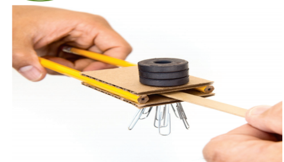
To know about the discovery of magnets
To identify Magnetic and Non Magnetic Materials
To distinguish between north and south poles
To list out the properties of magnets
To explain the principle of Maglev train
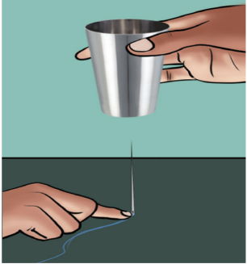
You might have seen magnets. Have you ever enjoyed playing with them?
Take a steel glass with a small magnet in it. Take a needle through which thread is passed. Press the thread with a finger near the hole of the needle as shown in the figure and raise the glass upward slowly.What happens? Dash
Observe the same activity performed by your teacher and note it. Dash
Does the needle stand vertically up without touching the glass? Why does this happen? Dash
Magic Stone of Magnus
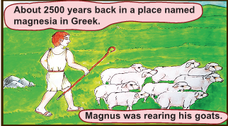
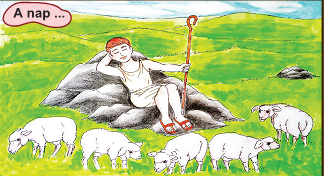
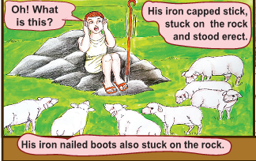
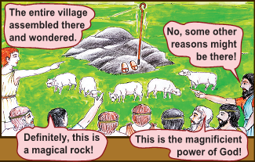
People wondered about this incident, each and every one expressed their views. What might be the reason for the stick, to get stuck on the rock? Dash
Yes, you are right. That is a magnetic rock. People found it attractive not only for the stick of Magnus, but also for all the materials made of iron. The more rocks of these kinds were found worldwide. These magnetic rocks were named ' Magnets' and the ore is called 'Magnetite' after the name of the boy Magnus. The name is also supposed to come after the name of the place (Magnesia) in which it was found.
Magnetite the ore with attracting property found in that region. Magnetite are natural magnets. They are called magnetic stones.
Natural magnets do not have a definite shape since they are used for finding direction, they are also called ‘leading stones’ or ‘lode stones.
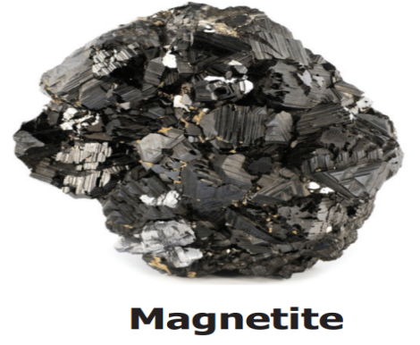
After learning the method of changing the piece of iron into magnet (magnetization) we have been making and using several kinds of magnets. Such man-made magnets are called artificial magnets.
Bar magnets, Horseshoe magnet, Ring magnet and Needle magnet are generally used artificial magnets.
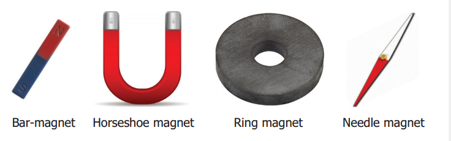
Oval shape, Disc Shapes and Cylindrical magnets are also available.
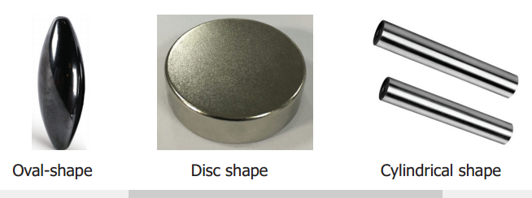
Activity 1: Take a magnet. Take the magnet closer to the objects surrounding you. What happens? Observe and note.
The objects attracted by the magnet: DASH IRONS, METALS
The objects not attracted by the magnet: DASH WOOD, PAPER, PLASTICS
Which substances are used to make the objects attracted by the magnet? DASH
IRONS, NEEDLE, BLADE, METALS ETC
Substances which are attracted by magnets are called magnetic substances. Iron, cobalt, nickel are magnetic substances.
Substances which are not attracted by magnets are called non-magnetic substances. Paper, plastic are called non-magnetic substances.
Place some iron filings on a paper. Place a bar magnet horizontally in the filings and turn it over a few times. Now lift the magnet. What do you see? Which part of the magnet has more iron filings sticking to it? Dash
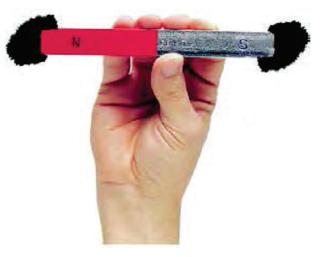
Which part of the magnet has almost no fillings sticking to it? DASH
The parts of the magnet those attract the largest amount of iron fillings are called as its poles. The attractive force of the magnet is very large near the two ends. These two ends are called its poles.
If you have a horseshoe magnet, or any other type of magnet at home, find the position of its poles by this experiment.
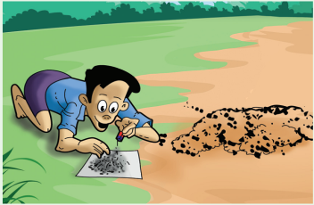
In experiments with magnets you will need to use iron filings again and again. You can do this by placing a magnet in a pile of sand and turning it around in the sand. The small pieces of iron present in the sand will stick to the magnet. If you cannot find sand you can look for iron pieces in clayey soil as well.
If you don’t have iron filings, you can collect small pieces of iron and they will serve the purpose as well.
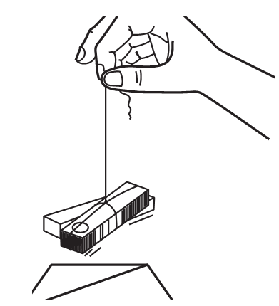
Tie a piece of thread to the centre of a bar magnet and suspend it. Note, in which direction the magnet stops. Draw a line on a sheet of cardboard or the table along the direction in which the bar magnet stops that means a line parallel to the bar magnet. Turn the magnet gently and let it come to a stop again repeated three or four times.
Does the bar magnet stop in the same direction each time? DASH - EACH POLES
In which direction does the magnet stop every time? DASH - MIDDLE OF THE BAR MAGNET
This is roughly the north-south direction. The end of the magnet that points to the north is called the North Pole, the end of the point to the South is called the south pole.
A freely suspended magnet always comes to the rest in a north south direction.
DO YOU KNOW (BOX NEWS)
The directive property of magnets has been used for centuries to find directions. Around 800 years ago, the Chinese discovered that a suspended lode stone stops in the north-south direction. Chinese used these lode stones to find directions. The navigators of that country used to keep a piece of lode stone suspended in their boats and during a storm or mist, they used the lode stone to locate directions.
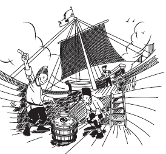
A Compass is an instrument which is used to find directions. It mostly used in ships and airplane. As a rule, mountaineers also carry a compass with them so that they do not lose their way in unknown places.
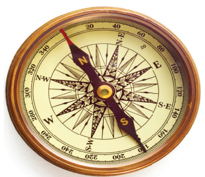
The compass has a magnetic needle that can rotate easily. The Marked end of the needle is the north pole of the magnet. Can you use a magnetic compass to find the West direction? Ask your teacher to help you in using a magnetic compass.
Attraction or repulsion
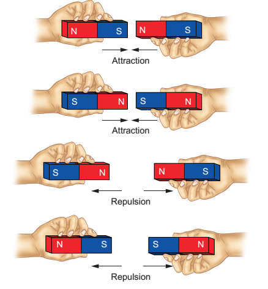
Take two similar magnets place them in four different ways as shown in figure
What do you observe? When do the magnets attract each other?
DASH NORTH POLE AND SOUTH POLE IS ATTRACT
When do the magnets repel each other?
DASH SAME POLE WILL BE REPULSION
Unlike poles (S-N, N-S) attract each other. Like poles (N-N, S-S) repel each other.
Activity2: LET US MAKE MAGNETS
Take a nail or a piece of iron and place it on a table. Now take a bar magnet and place one of its poles near one edge of the nail or piece of iron and rub from one into another end without changing the direction of the pole of a magnet. Repeat the process for 30 to 40 times.
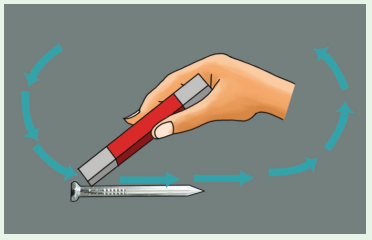
Bring a pin or of some Iron fillings near the nail or piece of iron to check whether it has become a magnet. Does the nail or piece of iron attract the pin or fillings? if not continue the same process for some more time.
Magnets lose their properties if they are heated or dropped from a height or hit with a hammer.
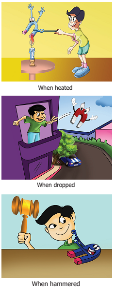
Do you know? Magnets lose their properties when they are placed near cellphone, computer, DVDs. These objects will also get affected by magnetic field.
Activity 3: Make your own magnetic compass
Insert a magnetized needle, that you made in the activity 2, into two Styrofoam balls (Thermocol balls) and place the needle in the bowl of water. Test whether the floating needle always turned in rest in the north - south direction. Note: If you don’t have Styrofoam balls you can use dry leaf or a cork piece.
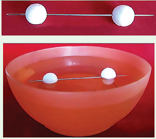
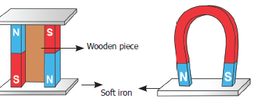
Improper storage can also cause magnets to lose their properties to keep them safe bar magnets should be kept in pairs with their unlike poles on the same side. They must be separated by a piece of wood and two pieces of soft iron should be placed across their ends. For a horseshoe magnet a single piece of soft iron can be used as a magnetic keeper across the poles.
We use various equipment with magnets in day to day life. Discuss with your friends about the usage of the magnets in the following instances.
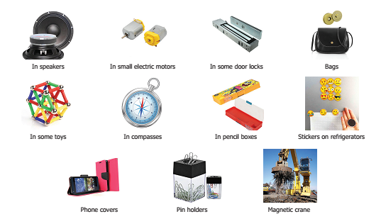
We know that like poles of a magnet repel each other. Keep two bar magnets as shown in the figure.
What do you observe? Dash
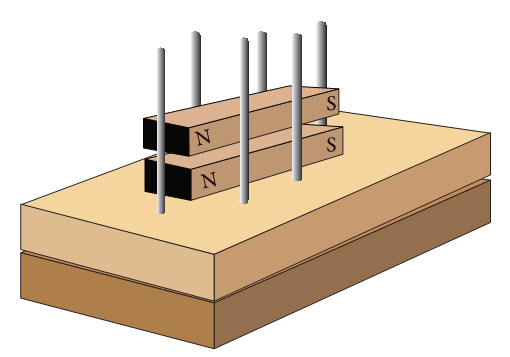
By using repulsion, we can levitate a magnetic object. Let us make a toy and enjoy magnetic levitation.
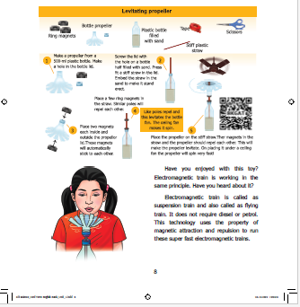
Image: The given image explain the concept Levitating propeller place the propeller on the stiff straw. Their magnets in the straw and the propeller should repel each other. This will make the propeller levitate. On placing it under a ceiling fan the propeller will spin very fast.
Have you enjoyed with this toy? Electromagnetic train is working in the same principle. Have you heard about it?
Electromagnetic train is called as suspension train and also called as flying train. It does not require diesel or petrol. This technology uses the property of magnetic attraction and repulsion to run these super-fast electromagnetic trains.
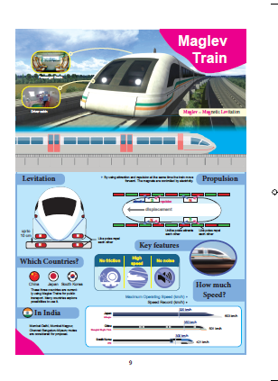
How does the electromagnetic train work?
Electromagnets are used in electromagnetic train electromagnets are magnetized only when current flows through them. When the direction of current is changed the poles of the electromagnets are also changed. Like poles of the magnet which are attached at the bottom of the train and rail track repel each other. So, that rain is lifted from the track up to a height of 10 centimetre.
We Know that we can move any magnetic object with the force of attraction or repulsion properties of magnets. This train also moves with the help of the magnets attached on the sides of track and the magnets fitted at the bottom side of the train. By controlling the current we can control the magnets and movement of the train.
As there are no moving parts, there is no friction. So, the train can easily attain a speed of 300 km per hour. These trains are capable of running up to 600 km/ hour. They do not make any noise. They require less energy and they are eco-friendly.
Many countries have taken efforts to use these trains, such trains are used for public transport only in China, Japan and South Korea. In India the possibilities of introducing these trains are under consideration. Write the difference between a normal and an electromagnetic train. Dash
Magnetites are natural magnets. They are called magnetic stones.
Man-made magnets are called artificial magnets.
Substances which are attracted by magnet are called as magnetic substances
Substances which are not attracted by magnets are called non-magnetic substances.
A freely suspended magnet always comes to rest in a north-south direction.
The end of the magnet that points to the north is called the North Pole. The end that points to the south is called the South Pole.
A compass is an instrument which is used to find directions.
Like Poles (N-N, S-S) repel each other and unlike poles (N-S, S-N) attract each other.
Magnets lose their properties if they are heated or dropped from a height or hit with a hammer.
I C T Corner
Magnet
Through this activity you'll be able to understand the properties of magnetic poles and magnetic field lines.
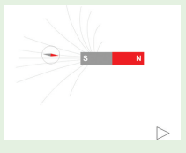
Step 1: Type the URL given or scan the QR code to launch the activity page.
Step 2: A diagram of a bar magnet and a magnetic needle are there. Click and drag the magnetic needle with the use of mouse, around the bar magnet. Observe the position of the magnetic field lines and how the needle rotates according the poles.
Step 3: Click the 'Next navigation icon'. A grid of magnetic needles around a bar magnet will appear. Click and drag the bar magnet. Observe the changes of the needles.
Step 4: Click the 'field lines' check box at the bottom of the activity window to see
the magnetic field lines.
Magnet URL:
http://www.physics-chemistry-interactive-flash-animation.com/
electricity_electromagnetism_interactive/bar_magnet_magnetic_
field_lines.htm
1. Choose the appropriate answer
1. An object that is attracted by a magnet.
a. Wooden piece
b. Plain pins
c. Eraser
d. A piece of paper
ANSWER: b plain pins
2. People who made mariner’s compass for the first time.
a. Indians
b. Europeans
c. Chinese
d. Egyptians
ANSWER: c Chinese
3. A freely suspended magnet always comes to rest in the DASH direction
a. North-east
b. South-west
c. East-west
d. North-south
ANSWER: d North-south
4. Magnets lose their properties when they are
a. Used
b. Stored
c. Hit with a hammer
d. Cleaned
ANSWER : c. Hit with a hammer
5. Mariner’s compass is used to find the
a. Speed
b. Displacement
c. Direction
d. motion
ANSWER : c. Direction
2. Fill in the blanks
1. Artificial magnets are made in different shapes, such as DASH, DASH and DASH. ANSWER bar magnet, horseshoe magnet, ring magnet
2. The Materials which are attracted towards the magnet are called DASH.
ANSWER magnetic materials
3. Paper is not a DASH material. ANSWER magnetic
4. In olden days, sailors used to find direction by suspending a piece of DASH. ANSWER bar magnet
5. A magnet always has DASH POLES. ANSWER: TWO
3. True or False if false, give the correct statement.
1. A cylindrical magnet has only one pole. ANSWER : FALSE, correct statement A cylindrical magnet has TWO poles.
2. Similar poles of a magnet repel each other. ANSWER : TRUE
3. Maximum iron filings stick in the middle of a bar magnet when it is brought near them. ANSWER FALSE, correct statement Minimum iron filings stick in the middle of a bar magnet when it is brought near them.
4. A compass can be used to find East-West direction at any place. ANSWER : TRUE
5. Rubber is a magnetic material. ANSWER : FALSE, correct statement Rubber is a non magnetic material
4. Match the following
1. Compass Maximum magnetic strength
2. Attraction Like poles
3. Repulsion Opposite poles
4. Magnetic Poles Magnetic needle
ANSWER:
1. Compass Magnetic needle
2. Attraction Opposite poles
3. Repulsion Like poles
4. Magnetic Poles Maximum magnetic strength
5. Circle the odd ones and give reasons
1. Iron nail, pins, rubber tube, needle. ANSWER rubber tube It is a nonmagnetic material
2. Lift, escalator, electromagnetic train, electric bulb. ANSWER: electric bulb. It is run help of electricity only.
3. Attraction, repulsion, pointing direction, illumination. ANSWER: illumination the action of
illuminating or decorative lighting.
6. The following diagrams show two magnets near one another. Use the words, ‘Attract, Repel, Turn around’ to describe what happens in each case.
![Image: showing two bar magnets with north and south pole in different position as a visual question image A shows two horizontally place bar magnet smeet opposites poles south and north . image B shows two horizontally place bar magnets meet same poles south and south . image c shows two vertically placed bar magnets meet opposite poles north and south . image d shows two magnets first magnet placed vertically above north and bottom south faced.second magnet placed horizontally south and north faced. image d shows two vertical placed magnets placed one by one top magnet placed south and north faced.bottom magnet faced north and south. image f shows one horizontal magnet one vertical magnet horizontal magnet is placed north and south faced.the vertical magnet placed north and south faced.](images/image59.png)
7. Write down the names of substances.
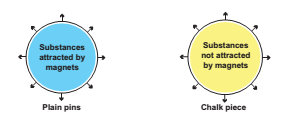
8. Give Short answer
9. Answer in detail
10. Questions based on Higher Order Thinking skills
1. You are provided with iron filings and a bar magnet without labelling the poles of the magnet. Using this
2. Two bar magnets are given in the figure A and B. By the property of attraction, identify the North pole and the South Pole in the bar magnet (B)
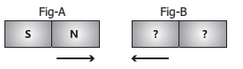
2. Take a glass of water with a few pins inside. How will you take out the pins without dipping your hands into water?
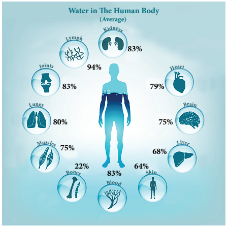
To recognize the sources and availability of water
To clarify the composition of water and the process of water cycle
To develop skills in suggesting ways to conserve water
To realize the importance of water for life on earth
To appreciate the efforts made to conserve water
Water is one of the basic substances present in the earth. It plays a vital role in the evolution and survival of life. It is impossible to imagine life on the earth without water. Water helps to regulate the temperature of our planet. It also helps to maintain the temperature in organisms.
We need water to perform several day to day activities like cooking food, washing clothes, cleaning utensils etc.
We get water from different water sources in our surroundings. In villages or towns wells, canals, tanks, ponds, rivers, water tanks, hand pipes are the main sources of water.
List out the sources from where you get water in your village or town.
For example, Ramu says he and his family get water from the pipes in washrooms and kitchens. Sankar says he has to use a handpump daily both in the morning and evening to collect the water. Raja says his mother used to get up early and walk to the pond to get water.
Where do you get water for your household uses?
Water is available in nature in three forms Solid, Liquid, Vapour.
Solid form of water - Ice - It is present in icebergs and ice caps on top of tall mountains glaciers and polar regions.
Liquid form of water - water - It is present in oceans, seas, lakes, rivers and even underground.
Gaseous form of water - Vapour - It is present in the air around us.
We know that nearly three fourths of the surface of the earth is covered by water. Most of the water that is 97 % of the total amount of the water that exists on earth is found in seas and oceans. Can we drink the water available in the sea?
Seawater is salty. But Water used for our daily purpose is not salty. It is known as fresh water. Water obtained from ponds, puddles, rivers, tube-wells and taps at home is usually freshwater. If the total water on earth were 100%, let's see what percent would be the availability of freshwater.
Look at the pie chart given below.
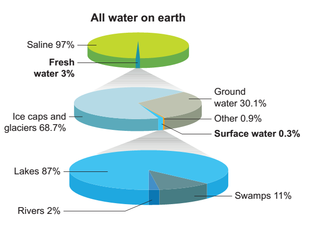
From the pie chart, it can also be noted that 97% water is saline water. Only 3% found is the freshwater and that too in polar ice caps and glaciers. So, this portion water is not readily available for drinking.
The distribution of the totally available freshwater is as follows:
Polar ice caps and glaciers 68.7%
Ground water 30.1%
Other sources of water 0.9%
Surface water 0.3%
The distribution of total surface water is as follows:
Lakes 87%
Rivers 2%
Swamps 11%
Thus, the above pie chart explains that we have a very small amount of fresh water available for human usage and so maintaining the water table and the conservation of water is very essential. Isn’t it?
BOX NEWS
DO YOU KNOW?
Water while passingthrough layers of soildissolves salts andminerals to a maximum extent. These salts and minerals havebeen deposited in seas and oceansfor millions of years and are still being deposited. In addition, the oceanicvolcanoes which are present inside, alsoadd salts to the sea. Water with largeamounts of dissolved solids is not potableor suitable for drinking. Such water is called saline water.
Activity 1: Relative amount of water at various sources
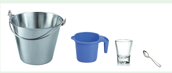
Take 20 litres of water in a bucket, a 500 ml mug, a 150 ml tumbler and a 1 ml spoon. If the capacity of the bucket is 20 litres, then it represents the total amount of water present on the Earth. Now, transfer a mug of water from the bucket and it is 500 ml and then it represents the total amount of fresh water present in the Earth. The water left in the bucket represents seas and oceans. This water is not fit for human use.
The water present in the mug represents the freshwater which is present in frozen form on snow-covered mountains, glaciers and polar ice caps. This water is also not readily available for human use. Next, transfer 150 ml of water to the tumbler, from the 500 ml mug. then it represents the total amount of groundwater. Finally, take one-fourth spoonful of water while the capacity of the spoon is 1 ml, then it represents the total amount of surface water that is water seen in all the rivers, lakes and ponds of the world. It can be taken as potable water.
When such a small amount of potable water is available, then we should be more economic in using water. Is it not?
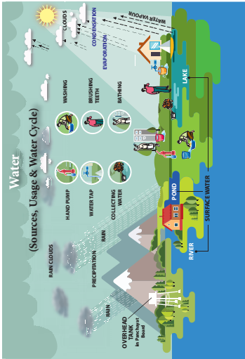
Activity 2:
Conduct the activity with common salt, sand, chalk powder, charcoal powder and copper sulphate.
Fill up the following table.
Substance |
Dissolves in water |
Does not dissolve in water |
Common Salt |
|
|
Sand |
|
|
Chalk Powder |
|
|
Charcoal Powder |
|
|
Copper Sulphate |
|
|
From the above activity we could observe that common salt and copper sulphate dissolve in water and contribute their properties like colour and other properties to water but sand, chalk powder and charcoal powder do not dissolve in water.
Water is a transparent, tasteless, odourless and nearly colourless chemical substance. It is composed of two atoms of hydrogen combined with one atom of oxygen. The molecular formula of water is H2O.
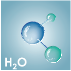
However, the physical composition of water changes from place to place. It can be clear or cloudy, oxygenated or not very oxygenated and it can be fresh or salty. The amount of salt in water is termed as salinity. Based on its salinity water is classified into three main categories such as freshwater, brackish water and sea water. Fresh water contains 0.05% to 1% of salt. Brackish water contains up to 3% of salt and seawater contains more than 3% of salt. Ocean water is composed of many substances. The salts include sodium chloride, magnesium chloride and calcium chloride
BOX ITEMS
DO YOU KNOW?
WATER FREEZE AT ZERO DEGREE CELSIUS AT NORMAL PRESSURE. EVERY YEAR MARCH 22 IS OBSERVE AS THE WORLD WATER DAY
Activity 3: Water contains dissolved salts
Take some tap water in a china dish and heat it. Continue heating till all the water gets dried up. Stop the heating and look at the china dish. What do you observe inside the China dish?
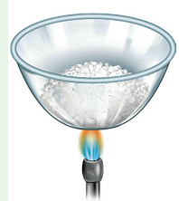
Deposits of some solid particles on the surface of a china dish can be observed. The deposit is of salts that are dissolved in water. This shows that water has dissolved salts in it.
Note: Do not use distilled water or water from purifiers or R.O. (Reverse Osmosis) unit and the like for this activity.
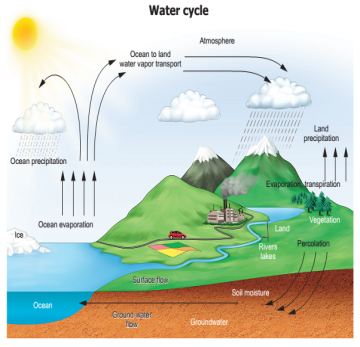
The water on the earth evaporates into the atmosphere due to the heat of the sun. The water vapour in the atmosphere forms clouds. From the clouds water falls on the earth in the form of rain or snow. By this natural process, water gets renewed. This is called the water cycle. Water cycle is a continuous process. It involves three stages evaporation, condensation and precipitation. It is also called the hydrological cycle.
Evaporation: Water from oceans, lakes, ponds and rivers evaporates due to the heat of the sun.
Condensation: Water vapour which enters into the atmosphere by evaporation moves upward with air, gets cooled and changes into tiny water droplets that form clouds in the sky.
Precipitation: The millions of tiny droplets collide with one another to form larger droplets. When the air around the clouds is cool these drops of water fall in the form of snow or rain.
Activity 4: Spread a piece of wet cloth in the sunlight. Observe after some time. Where has the water in the wet cloth gone?
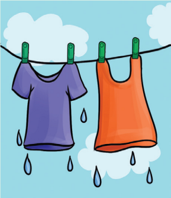
The water evaporates into the atmosphere due to the heat of the sun.
Have you heard of transpiration?
It is the process of loss of water from the aerial parts of a plant in vapour form. There is a continuous cycling of water and it exists in three forms in nature. Water evaporating from lakes, rivers and oceans forms the gaseous state. Rain water forms the liquid state. Snow on mountains and polar ice caps forms the solid state.
These three states occur in nature, keep the total amount of water on the earth constant even when the whole world is using it!
How do you know that the atmosphere has water vapour?
Let us do the following activity
Activity 5: Condensation of water vapour.
Take a glass half filled with water. Wipe the outer surface of the glass with a clean piece of cloth. Add some ice into the water. Wait for one or two minutes. Observe the changes that take place on the outer surface of the glass. From where do water drops appear on the outer side of the glass? The cold surface of the glass containing icy water cools the air around it and the water vapour of the air condenses on the surface of the glass. This process is also the result of condensation of water vapour.
Three types of natural sources of freshwater are available on the earth.
Surface water
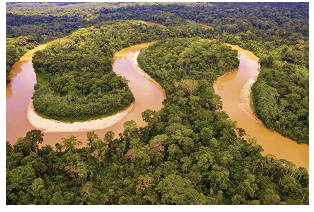
Water present on the surface of the earth such as river,lake,ponds, streams or freshwater wetland is called surface water.
Frozen water
Water that is present in the frozen form as polar ice-caps and glaciers are called frozen water. A larger portion of water is 68.7% of the total available fresh water in frozen state.
Ground water
Ground water is the water present beneath Earth's surface in soil. This water is obtained through springs, open wells, tube wells, or hand pumps etc.,
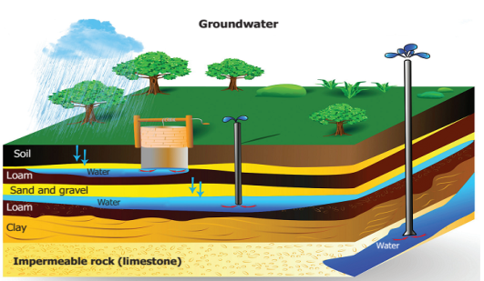
BOX NEWS
DO YOU KNOW?
The Himalayas, contain ice caps, ice bergs and glaciers. Ten of Asia’s largest rivers flow from the Himalayas and more than a billion people’s livelihoods depend on those river
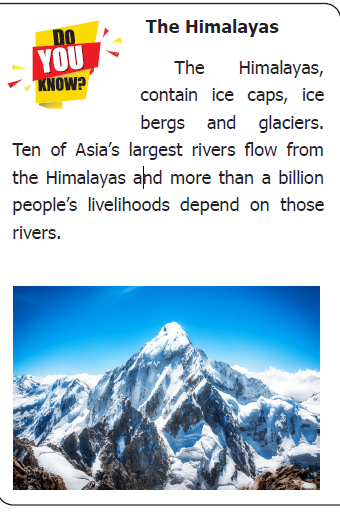
More to know: Water is measured in litre and millilitre. Gallon is also a measure of volume of liquids.
1 Gallon = 3.785 litre. Water level in the reservoirs is measured in TMC (One thousand million cubic feet). Water released from dams is measured in cusec (cubic feet per sec)
BOX NEWS
DO YOU KNOW?
Aquatic animals
During winter, water in lakes and ponds in the cold countries will be frozen and a solid layer of ice is formed on the surface of water. Still aquatic animals living under the ice do not die. This is because the floating layer of ice acts as a protective coat, and doesn’t permit heat to escape from water. So as the water at the surface alone turns to ice, lets the existence of aquatic animals.
There is no change in the total quantity of water available on the earth. It remains the same. But the water useful for plants, animals and man is decreasing day by day. It is called scarcity of water.
What are the reasons for scarcity of Water?
1. Population explosion
2. Uneven distribution of rainfall
3. Decline of groundwater table
4. Pollution of water
5. Careless use of water
We should take care to prevent scarcity of water. Otherwise, it is impossible for organisms to live on the earth. The only method of preventing scarcity of water is conservation of water. Saving water for the future generations by using water carefully and in a limited way is conservation of water.
Mainly, two methods can be followed for the conservation of water.
Water management consists of the following factors:
a. Bringing awareness about the bad effects of throwing wastes into the water bodies
b. Recycling of water by separating pollutants.
c. Minimizing the use of chemical fertilizers in agriculture. It reduces the pollution of underground water.
d. Controlling deforestation
e. Adopting drip irrigation and sprinkler irrigation in agriculture. By this way lesser amount of water can be used for the irrigation
Direct collection and use of rain water is called rainwater harvesting.
There are two types of rainwater harvesting.
a. Collecting water from where it falls.
example Collecting water from the rooftops of the houses or buildings (Roof water harvesting).
b. Collecting flowing rain water
example Collecting rainwater by constructing ponds with bund
BOX NEWS
DO YOU KNOW?
Coovam is an estuary!
Estuaries are wetlands where water bodies meet the sea. It is a combination of fresh water from land meeting the salty seawater. Estuaries are home to unique plants and animal species.
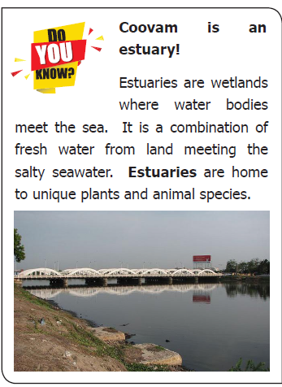
In Human body: water in all cells, organs and tissues helps regulate body temperature and maintain other functions. On an average, the human body requires 2 to 3 litres of water per day for proper functioning. Water helps in digestion of food and removal of toxins from the body.
Domestic uses: Apart from drinking, people use water for many other purposes. These include cooking, bathing, washing clothes, washing utensils, keeping houses and common places clean, watering plants, etc
Do you know
Swamps are wetlands that are forested. They occur along large rivers or on the shores of large lakes. The water of a swamp may be freshwater, brackish water or seawater. Swamps are important for providing fresh water and oxygen to all life. Pichavaram Mangroves in Chidambaram, Muthupet mangrove wetland. Pallikkaranai wetland in Chennai, Chembarambakkam in Kancheepuram are a few examples of swamps in Tamilnadu.
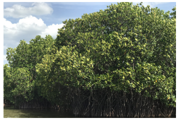
Agriculture: Water is also essential for the healthy growth of farm crops and farm stock and is used in the manufacture of many products.
Industry: Industry depends on water at all levels of production. It is used as a material, a solvent and for generating electricity.
Activity 6: Estimation of water consumed by a family on a day.
Activity |
Amount of water used (in litres) |
Brushing |
|
Bathing |
|
Washing clothes |
|
Toilets |
|
Cooking |
|
Washing utensils |
|
Cleaning floor |
|
Any other purpose |
|
Total amount of water used by a family in a day |
|
Water is one of the most important components that all animals including human beings and plants depend on for their livelihood.
To an extent of 97% of the total water that exists on Earth is found in seas and oceans.
Only 3% of the freshwater is available in polar ice caps and glaciers.
Lakes, rivers, swamps constitute only 0.3% of the surface water.
The moisture in the soil indicates the presence of underground water.
The continuous circulation of water in nature is called the water cycle. It is effected by evaporation, condensation, precipitation and transpiration.
Ground water is the water present beneath Earth's surface in soil.
I C T Corner
Water
Through this activity you will be able to know what happens to water when it is taken out of nature, into our house and once it leaves our houses.
Step 1: Type the URL or scan the QR code to launch the activity.
Step 2 : A page of 3 games will open, click on the first game 'Melbourne water cycle',
and click the "Play the Melbourne water game" button to start the game.
Step 3: Play the game by following the instructions and using the navigation keys.
Observe the steps of water usage and the process of recycling the used water.
Step 4: Play the other two games to know about the Natural water cycle and Sources of water.
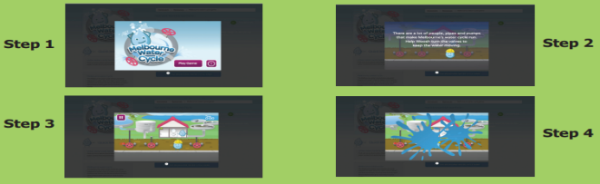
Simple Circuit’s URL:
https://www.educationsoutheastwater.com.au/resources?audience=&
keywords=&topic=&yearLevel=&type=online-game
The Revolution in Chemistry
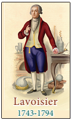
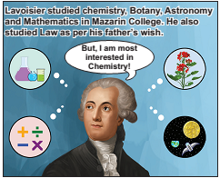
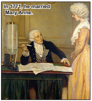
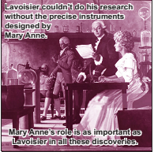
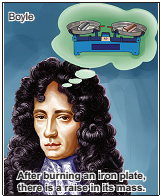
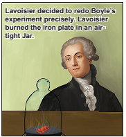
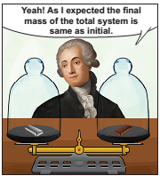
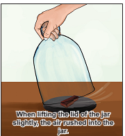
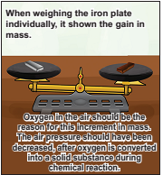
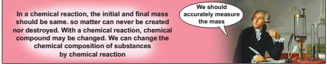

1. Choose the appropriate answer
1. Around 97% of water available on earth is dash water.
a. fresh
b. pure
c. salty
d. Polluted
Answer: c Salty
2. Which of the following is not a part of water cycle?
a. evaporation
b. condensation
c. rain
d. Distillation
Answer:d. distillation
3. Which of the following processes add water vapour to the atmosphere?
1. Transpiration
2. Precipitation
3. Condensation
4. Evaporation
a. 2 and 3
b. 2 and 4
c. 1 and 4
d. 1 and 2
Answer: c 1 and 4
4. About 30% of the freshwater is found in?
a. glaciers
b. ground water
c. other sources of water
d. surface water
Answer:b. ground water
5. Using R.O (Reverse Osmosis) plant at home eliminates a lot of non-potable water. The best way to effectively use the expelled water of RO plant is dash
a. make the expelled water go and seep near the bore well
b. use it for watering plants
c. to drink the expelled water after boiling and cooling
d. to use for cooking as the water is full of many nutrients
Answer: b use it for watering plants
2. Fill in the blanks
1. Only Dash percent of natural water is available for human consumption. Answer: 1%
2. The process of changing water into its vapour is called Dash. Answer: Evaporation
3. Dash is built on rivers to regulate water flow and distribute water. Answer: Dam
4. Water levels in rivers increase greatly during Dash. Answer: Rainy season
5. Water cycle is also called as Dash. Answer: Hydrological cycle
3. True or False. If False, give the correct statement
1. Water present in rivers, lakes and ponds is unfit for use by human beings. Answer:True
2. Seas are formed when the water table meets the land surface. Answer: False, Ground water are
formed when the water table meets the land surface.
3 The evaporation of water takes place only in sunlight. Answer:True
4. Condensation results in the formation of dew on grass. Answer:True
5. Sea water can be used for irrigation as such. Answer: False, Surface water can be used for irrigation as such.
4. Match the following
1. Flood Lake
2. Surface water Evaporation
3. Sun light Water vapour
4. Cloud Pole
5. Frozen water Increased rainfall
Answer:
1. Flood Increased rainfall
2. Surface water Lake
3. Sun light Evaporation
4. Cloud Water vapour
5. Frozen water Pole
5. Arrange the following statements in correct sequence
1. These vapours condense to form tiny droplets of water.
2. The water droplets come together to form large water droplets.
3. The heat of the sun causes evaporation of water from the surface of the earth, oceans, lakes, rivers and other water bodies.
4. The large water droplets become heavy and the air cannot hold them, therefore, they fall as rains.
5. Water vapour is also continuously added to the atmosphere through transpiration from the surface of the leaves of trees.
6. Warm air carrying clouds rises up.
7. Higher up in the atmosphere, the air is cool.
8. These droplets floating in the air along with the dust particles form clouds.
Answer
1. The heat of the sun causes evaporation of water from the surface of the earth, oceans, lakes, rivers and other waterbodies.
2. Water vapour is also continuously added to the atmosphere through transpiration from the surface of the leaves of trees.
3. Warm air carrying clouds rises up.
4. These droplets floating in the air along with the dust particles form clouds.
5. Higher up in the atmosphere, the air is cool.
6. These vapours condense to form tiny droplets of water.
7. The water droplets come together to form large water droplets.
8. The large water droplets become heavy and the air cannot hold them,
6. Analogy
1. Population explosion: Water scarcity: Recycle: Dash Answer: Water management
2. Ground water: Dash Surface water: lakes Answer: Fresh water
7. Give very short answer
1. Name four different sources of water
2. How do people in cities and rural areas get water for various purposes?
3. Take out a cooled bottle of water from the refrigerator and keep it on a table. After sometime, you notice a puddle of water around it. Why?
4. We could see clouds almost every day. Why doesn’t it rain daily?
5. Name the places where water is found as ice.
6. How do aquatic animals manage to live in the Arctic and Antarctic Circle?
7. What are the types of rainwater harvesting?
8. Give short answer
1. Differentiate between surface water and groundwater.
2. Write a few slogans of your own on the topic “Save Water”.
3. About 71% of earth’s surface is covered with water, then why do we face scarcity of water?
4. Give reason for the following statement – Sewage should not be disposed of in rivers or oceans before treatment.
5. Give the reasons, why water scarcity is in India? Explain.
9. Answer in detail
1. What is potable water? List down its characteristics.
2. Who is known as the waterman of India? Browse the net and find the details about the award the waterman received for water management. State the findings by drafting a report.
3. What is rainwater harvesting? Explain in a few sentences how it can be used in houses.
10. Question based on Higher Order Thinking Skills
1. When there is no pond or lake in an area, will there be formation of clouds possible in that area?
2. To clean the spectacles, people often breathe out on glasses to make them wet. Explain why the glasses become wet.
11. CROSSWORD
DOWN
1. A method of water conservation.
2. Process of getting water vapour from seawater.
6. Water stored in dams is used for generation of DASH
ACROSS
3. DASH is a large body of non-potable water found in nature.
4. In summer, the body loses water as DASH.
5. Plants undergo DASH and contribute to the water cycle.
![THE QUESTION NUMBER 11 shows crossword PUZZLES . the learner asked to answer the given crossword puzzle . the following keys FIRST KEY DOWNWORDS 1. A method of water conservation. 2. Process of getting water vapour from seawater. 6. Water stored in dams is used for generation of DASH SECOND KEY ACROSS 3. DASH is a large body of non-potable water found in nature. 4. In summer, the body loses water as DASH. 5. Plants undergo DASH and contribute to the water cycle. THE ACTUAL CROSS WORD PUZZLE IS FOLLOWING MANNER 1st down starst from R dash C dash dash dash I dash dash 2nd down starts from E dash dash dash O DASH DASH DASH DASH DASH N 3RD down starts from E DASH DASH DASH DASH DASH DASH DASH DASH DASH Y IN THE FIRST ACROSS STARTS FROM O C E DASH DASH S DASH DASH E DASH T THE SECOND ACROSS STARTS FROM S DASH E DASH T THE THIRD ACROSS STARTS FROM T DASH DASH DASH DASH DASH DASH DASH DASH DASH](images/image102.png)
12 (1). Observe the given graph carefully and answer the questions.
a. What percentage of water is seen in fish?
b. Name the food item that has the maximum amount of water in its content.
c. Name the food item that has the minimum amount of water in its content.
d. Human body consists of about a percentage of water.
e. Specify the food item that can be consumed by a person when he or she is suffering from dehydration.
(2) Look at the map of Tamilnadu showing annual rainfall and answer the questions given below
![Image, picture of tamil nadu map shows high rain fall districts in blue colour ,medium rain fall districts in red colour and low rain fall districts in green colour The districts that get only low annual rainfall in Tamilnadu. 1 Dharmapuri 2 erode 3 perambalur 4 thanjavur 5 thiruchirapalli 6 pudukkottai 7 karur 8.dindugul 9 madurai 10 sivagangai 11 ramanathapuram the districts that get a medium annual rainfall in Tamilnadu. 1 thoothukudi 2 virudhunagar 3 ariyalur 4 thiruvarur 5 kallakuruchi 6 villupuram 7 thiruvannamalai 8. kanchipuram 9 thiruvallur 10 vellore 11 thirupattur 12 krishnagiri 13 tiruppur the districts that enjoy high annual rainfall in Tamilnadu. 1 the nilgiris 2 coimbatore 3 theni 4 tenkasi 5 thirunelveli 6 cuddalore 7 mayiladuthurai 8 nagapattinam](images/image191.png)
a. Identify the districts that get only low annual rainfall in Tamilnadu.
b. Identify the districts that get a medium annual rainfall in Tamilnadu.
c. State the districts that enjoy high annual rainfall in Tamilnadu.
To understand the importance of science in everyday life
To understand the preparation of soaps and detergents
To know about kinds of fertilizers and its uses
To know about uses of cement, gypsum, Epsom, and plaster of paris
To know about uses of phenols and adhesives in day to day life
We have studied earlier about the physical changes and chemical changes. Can you identify, from the following list which are physical changes and which are chemical changes?
breaking of a stick into two pieces
burning of a paper
tearing paper into small pieces
dissolving sugar in water
burning of petrol or LPG gas
preparation of tea
water boiling into water vapour
coconut oil becoming solid during winter
Can you see the important difference between the chemical change and physical change? When you cut a paper into two, both are still paper pieces, but once you burn it, there is no longer the paper, only some ash and the smoke are left.
Chemical change results in the change of the substance; in physical change only the shape, size or volume changes; the state of the matter may also change, from liquid to gas or from liquid to solid, however the substance remains, chemically as it is.
Let us do the following experiment. Add a pinch of turmeric powder to water; water turns yellow. Take a small quantity of soap water in a beaker and add a pinch of turmeric powder to it. Now, what happens? Is there any change in colour of the solution? Is it also turning to yellow or to some other colour?
Try adding turmeric powder to various household liquids and observe the result. Try it on, say, tamarind extract. Try it on with cleaning liquids in the house. Does it change the colour?
Chemists identify turmeric powder as a ‘natural indicator’. The change in colour indicates that the material is either acid or base medium.
Find answers for the following questions with the help of your teacher. This will help you to understand how chemistry plays a vital role in our life.
How does milk change into curd?
How can you remove stains on the copper vessels?
Idli is a little bit hard while we cook by using newly grinded idli dough but it is soft with old dough. Why?
How does rusting of iron happen?
Why does white sugar change into black when heating?
We can understand the chemical changes that happen around us by knowing the answers for the above questions.
We use chemical changes in various forms in our daily life. Chemistry is the branch of science which deals with the study of particles around us. The beauty of chemistry is that it explains the properties of the basic components of particles such as atoms and molecules and the effects of their combination.
We can consider all the particles around us as chemicals. The water (H2O) we drink is the combination of hydrogen and oxygen. The salt (sodium chloride) we use in our kitchen is a combination of the chemicals, sodium and chlorine. Even our body is made up of a lot of chemical particles.
Box News: DO YOU KNOW?
When we cut onion, we get tears in the eyes with irritation, because of the presence of a chemical, propane thial s-oxide in onion. This is easily volatile. When we cut onion some of the cells are damaged and this chemical comes out. It becomes vapour and reach our eyes result in irritation and tears in eyes. When we crush the onion, more cells will be damaged and more chemicals come out. Why the tears are less produced when onion is cut after soaking in water?
We could prepare soft idly as a result of a chemical change named fermentation that takes place in the idly batter. During fermentation the idly batter undergoes a chemical change by bacteria. While cooking, the food products undergo so many chemical changes. As a result, there are favourable changes in colour, flavour and taste in the food.
We can use chemical changes to produce certain materials. For example, some of the objects such as soaps, fertilizers, plastics and cement which we use in our daily life can be prepared by making chemical changes in some naturally occurring objects
Activity 1: Discuss with your group and list out a few chemicals which we use in our home and school. DASH
We can study about the manufacturing processes and usages of certain materials
We use in our daily life such as soaps, fertilizers, cement, gypsum, Epsom, plaster of paris, phenol and adhesives in this lesson.
Bathing soap and washing detergents are kinds of soaps which we use in our daily life. In addition to this, we are using washing powder to remove strong stains on the clothes.
The detergent molecules have two sides, one side water loving, other water hating. Water hating goes and joins with dirt and oil in the cloth while the water loving joins with the water molecules.
When you agitate the cloth, the dirt is surrounded by many molecules and is taken away from the cloth. The cloth becomes clean, and the dirt surrounded by the detergent molecules flat in the water making it dirty.
We can prepare our own soap by the following activity
Activity 2: Preparation of Soap Materials Required: 35 ml of water 10 gram of Lye (Sodium hydroxide) 60 ml of coconut oil.
Process : Cover your work area with old newspapers. Take 35 ml of water in a jar. Add 10 gram of concentrated sodium hydroxide and allow it to cool.
Then add 60 ml of coconut oil drop by drop and stir it well. Pour that solution into an empty match box, soap can be obtained after getting dried.
Try this soap to wash your handkerchief.
Different soaps for different purposes are prepared with various raw materials. We can understand this by doing the following activity.
Activity 3: Collect various kinds of soap’s wrapper. Complete the following table based on the information provided in the wrapper.
Serial Number |
Name of the soap |
Ingredients |
1 |
Bathing soap |
|
2 |
Washing soap |
|
3 |
Bathing soap for kids |
|
4 |
Toilet Cleaners |
|
5 |
House floor cleaners liquid |
|
Inference: Nature of the soaps varies according to its constituents.
Chemistry in Everyday Life
Apart from water, sunlight and air, certain nutrients are also needed for the growth of
plants. We know that the plants get their nutrients from the soil.
Nitrogen (N), Phosphorous (P) and Potassium (K) are the three important nutrients among the various nutrients needed for the growth of plants. These three are called Principal Nutrients.
The table given below depicts the quantity of elements absorbed by certain common plants.
Crop |
Approximate Yield per hectare in kilograms |
Nitrogen in kilograms |
Phosphorus in kilograms |
Potassium in kilograms
|
Crop Rice |
Rice Yield 2,240 kilograms per hectare |
Nitrogen obserbed 34 kilograms per hectare |
Phosphorus obserbed 22 kilograms per hectare |
Potassium obserbed 67 kilograms per hectare |
Crop Corn |
Corn Yield 2,016 kilograms per hectare |
Nitrogen obserbed 36 kilograms per hectare |
Phosphorus obserbed 20 kilograms per hectare |
Potassium obserbed 39 kilograms per hectare |
Crop Sugarcane |
Sugarcane Yield 67,200 kilograms per hectare |
Nitrogen obserbed 90 kilograms per hectare |
Phosphorus obserbed 17 kilograms per hectare |
Potassium obserbed 202 kilogramsper hectare |
Crop Groundnut |
Groundnut Yield 1,904 kilograms per hectare |
Nitrogen obserbed 78 kilograms per hectare |
Phosphorus obserbed 22 kilograms per hectare |
Potassium obserbed 45 kilograms per hectare |
What would happen to the nutrient content of the soil, if the field is farmed continuously? DASH
How could we resend these nutrients back to the soil? DASH
Fertilizers are organic or inorganic materials that we add to the soil to provide one or more nutrients to the soil.
Fertilizers given to plants can be classified into two. They are organic and in organic fertilizers.
Fertilizers containing only plant or animal-based materials or those synthesized by microorganisms are called organic fertilizers.
These fertilizers can be prepared easily. This type of fertilizers are economical. example Vermicompost, compost.
The fertilizers prepared by using natural elements by making them undergo chemical changes in the factories are called inorganic fertilizers. example Urea, Ammonium sulphate and Super phosphate and potassium nitrate.
The table given below lists the nutrients in inorganic fertilizers
Name of the fertilizer |
Nitrogen in percentage |
Phosphorus in percentage |
Potassium in percentage |
Name of the fertilizer Urea |
Nitrogen in percentage 46 |
Phosphorus in percentage 0 |
Potassium in percentage 0 |
Name of the fertilizer Super phosphate |
Nitrogen in percentage 0 |
Phosphorus in percentage: 8 TO 9 |
Potassium in percentage 0 |
Name of the fertilizer Ammonium sulphate |
Nitrogen in percentage 21 |
Phosphorus in percentage 0 |
Potassium in percentage 0 |
Name of the fertilizer Potassium nitrate |
Nitrogen in percentage 13 |
Phosphorus in percentage 0 |
Potassium in percentage 44 |
If we use 50 kg of urea, then according to the table, 23 kg of nitrogen (46 percent) will be added to the soil.
The percentage of nitrogen in ammonium sulphate is dash
If 50 kg of potassium nitrate is added to soil, how much potassium would the soil get? dash
Activity 4: Make a visit to the agriculture field in your area. List out the various crops and types of fertilizers used there.
Serial Number |
Name of the crop |
Name of the fertilizer |
Serial Number1 |
|
|
Serial Number2 |
|
|
Serial Number 3 |
|
|
BOX NEWS
DO YOU KNOW?
Earthworms take organic wastes as food and produce compost castings. So earthworms are known as Farmer's friends because of the multitude of services they provide to improve soil health and consequently plant health.
In the ancient period, the houses were constructed by using the mixture of lime, sand and wood. At present, the people widely use cement for construction of houses, dams and bridges. The cement is manufactured by crushing naturally occurring minerals such as lime, clay and gypsum through a milling process.
Cement becomes hardened when it is mixed with water. Gypsum plays a very important role in controlling the rate of hardening of the cement. During the cement manufacturing process, a small amount of gypsum is added at the final grinding process. Gypsum is added to control the “setting of cement”.
BOX NEWS
DO YOU KNOW?
In 1824, Joseph Aspdin invented Portland cement by burning finely ground chalk and clay in a kiln. It was named “Portland” cement because it resembled the high-quality building stones found in Portland, England.
Cement is used as mortar, concrete and reinforced cement concrete.
Mortar is a paste of cement and sand mixed with water. In houses, mortar is used to bind building blocks for constructing walls, to apply coating over them and to lay floor.
Concrete is a mixture of cement, sand and gravel. It is used in the construction of buildings, bridges and dams.
Reinforced cement concrete is a composite material by mixing iron mesh with cement. This is very strong and firm. It is used in the construction of dams, bridges, centering works in houses and construction of pillars. Huge water tanks, water pipes and drainages are built with this.
Box news
Activity 5:
Take three empty tumblers of the same size and name them as A, B and C. Add two teaspoonful of cement in each of the containers. Then pour one teaspoonful of water in container A and two spoon ful of water in B and three spoonful of water in C.
After an hour, observe which container of the cement set fast? Touch the containers and see if they are warm or cool. From this experiment, we understand that water and cement should be mixed in a certain ratio for a fast setting.
Gypsum is a soft white or grey, naturally available mineral. The chemical name of gypsum is calcium sulphate dihydrate.
The molecular formula of gypsum is Ca So 4 · 2H2O.
Used as fertilizers.
Used in the process of making cement.
In the process of making Plaster of Paris.
Epsom salt is magnesium sulphate hepta hydrate.
The molecular formula of Epsom is MgSO4 7H2O It offers a wide range of uses.
Eases stress and relaxes the body
Helps muscles and nerves function properly
Medicine for skin problems improving plant growth in agriculture
Plaster of Paris consists of fine white powder (calcium sulphate hemihydrate) The molecular formula of Plaster of Paris is CaSO4. Half H2O. Known since ancient times, plaster of paris is so called because of its preparation from the abundant gypsum found near Paris, capital of France. Plaster of paris is prepared by heating gypsum, where it gets partially dehydrated.
In making black board chalks.
In surgery for setting fractured bones.
For making casts for statues and toys etc.
In construction industry
Have you ever observed the oily material which is used to clean your house? Do you know what it is? It is a chemical, named as Phenol.
Phenol is a carbolic acid of an organic compound. It is a necessary ingredient for preparing a variety of phenol products. The molecular formula of phenol is C6H5OH, it is a weak acid. It is a volatile, white crystalline powder.
It is a colourless solution, but changes into red in the presence of dust.
It irritates when exposed on human skin. It is widely used for industrial purposes. Phenol itself is used (in low concentrations) in mouthwash and as a disinfectant in household cleaners. Phenol is used as a surgical antiseptic since it kills microorganisms.
What will you do when a page of your book is torn accidentally? It can be fixed by using a cello tape. How does Sellotape work? There is a paste-like material on one surface of the cello tape. Have you ever discussed this material? The paste like substance is called adhesive. It is commonly known as glue, mucilage, or paste. The substances applied to one surface, or both the surfaces of two separate items that binds them together and resists their separation are called adhesives.
Adhesives are substances that are used to join two or more components together through attractive forces acting across the Interfaces.
Do you notice how the puncture of your bicycle is repaired by the shopkeeper? He ensures the punctured surfaces are clean, dry and free of dust, and roughens the area around the hole using a metal scraper. He takes an appropriate patch of tyre-tube and applies a suitable adhesive to both the roughened area and to the underside of the patch, applying firm pressure and allows drying completely. Why does he apply pressure? This increases the adhesive capacity at both the surfaces and ensures proper binding.
There are two kinds of adhesives, one is natural made from starch and another one is artificial made from chemicals. The one used in a puncture shop is an artificial adhesive.
Artificial adhesives may be classified in a variety of ways depending on their utilities. Their forms are paste, liquid, film, pellets, tape.
It is used in various conditions such as hot melt, reactive hot melt, thermo setting,
pressure sensitive, and contact.
Soaps are prepared by heating the mixture of olive oil, animal fat and concentrated sodium hydroxide solutions.
Fertilizer facilitates growth of plants.
Vermicompost has high nutrient benefits and it is useful for sustaining the land fertility.
Cement is manufactured by using lime, clay and gypsum.
Plaster of Paris is used to fix bone fractures.
Diluted phenol is used as a cleaner, disinfectant and mouthwash.
Adhesives are substances that are used to join two or more components together.
ICT Corner
Nutrients for life
Through this activity you will be able to learn about the 4Rs of crop nutrients and their importance.
Step 1: Type the following URL in the browser. 'NUTRIENTS FOR LIFE' activity page will open.
Step 2: Click the 'X' icon on the top left of the activity window to close the welcome note and start the activity or click on 'Next' on the bottom to read the instructions.
Step 3: A com field, 4 cubes and 4 dials are shown, Using the mouse grab the cubes at the bottom which are labelled WATER, N, P, K and drop them over the crop.
Step 4: Each time you apply water or nutrients on the crop it will rise the dial. Keep all the dials in the green. Repeat the same process till the crop is fully grown.
Nutrients for life URL:
http://seedsurvivor.com/agrium-games/Feeding%20the%20Future/
pictures are indicative only
1. Choose the appropriate answer
1. Soaps were originally made from DASH .
a. proteins
b. animal fats and vegetable oils
c. chemicals extracted from the soil
d. foam booster
ANSWER: b. animal fats and vegetable oils
2. The saponification of a fat or oil is done using DASH solution for hot process.
a. Ammonium hydroxide
b. Sodium hydroxide
c. Hydrochloric acid
d. Sodium chloride
ANSWER: b. Sodium hydroxide
3. Gypsum is added to the cement for DASH .
a. fast setting
b. delayed setting
c. hardening
d. making paste
ANSWER: b delayed setting
4. Phenol is DASH.
a. carbolic acid
b. acetic acid
c. benzoic acid
d. hydrochloric acid
ANSWER: a carbolic acid
5. Natural adhesives are made from DASH.
a. Protein
b. fat
c. starch
d. Vitamins
ANSWER: c starch
2. Fill in the Blanks
1. DASH gas causes tears in our eyes while cutting onions. ANSWER: propanethial s-oxide
2. Water, coconut oil and DASH are necessary for soap preparation. ANSWER: SODIUM HYDROXIDE
3. DASH is called a farmer's best friend. ANSWER: EARTH WORM
4. DASH fertilizer is eco-friendly. ANSWER: VERMICOMPOST
5. DASH is an example for natural adhesive. ANSWER: STARCH
3. True or False. If False, give the correct statement
1. Concentrated phenol is used as a disinfectant. ANSWER: FALSE
Correct statement: Low concentrated phenol is used as a disinfectant
2. Gypsum is largely used in medical industries. ANSWER: FALSE
Correct statement: Gypsum is largely used in cement preparation
3. Plaster of Paris is obtained from heating gypsum. ANSWER: TRUE
4. Adhesives are the substances used to separate the components. ANSWER: FALSE
Correct statement: Adhesives are the substances used to join the components
5. N P K are the primary nutrients for plants. ANSWER: TRUE
4. Match the following
1. Soap C6H5 OH
2. Cement CALSIUM SULPHATE, 2H2O
3. Fertilizers sodium hydroxide
4. Gypsum RCC
5. Phenol NPK
ANSWER:
1. Soap sodium hydroxide
2. Cement RCC
3. Fertilizers NPK
4. Gypsum CALSIUM SULPHATE, 2 H 2 O
5. Phenol C 6 H 5 O H
5. Arrange the following statements in correct sequence
1. Pour that solution into an empty match box, soap can be obtained after drying.
2. Take the necessary quantity of water in a jar.
3. Then add coconut oil drop by drop and stir it well.
4. Add concentrated sodium hydroxide in the jar and allow it to cool.
5. Try this soap to wash your hand kerchief.
6. Cover your work area with old newspapers.
ANSWER:
1. Cover your work area with old newspapers.
2. Take the necessary quantity of water in a jar.
3. Add concentrated sodium hydroxide in the jar and allow it to cool.
4. Then add coconut oil drop by drop and stir it well.
5. Pour that solution into an empty match box, soap can be obtained after drying
6. Try this soap to wash your hand kerchief.
6. Analogy
1. Urea: Inorganic fertilizer: Vermicompost: ORGANIC
2. STARCH: Natural adhesives: Cello tape: Artificial adhesives.
7. Give very short answer
1. What are the three main constituents of soap?
2. What are the two different types of molecules found in the soap?
3. Give an example for inorganic fertilizer.
4. Mention any three physical properties of phenol.
5. Explain the uses of plaster of paris.
6. What are the ingredients of the cement?
7. Why is gypsum used in cement production?
8. Give short answer
1. Why is an earthworm called a farmer's friend?
2. Explain the process of manufacturing cement.
3. What are the uses of Gypsum?
9. Answer in detail
1. Explain what is RCC and give its uses?
2. How are detergents manufactured?
10. Questions based on Higher Order Thinking Skills
1. Ravi is a farmer; he rears many cattle in his farm. His field has many bio wastes. Advise Ravi how to change this bio waste to compost by using vermicomposting techniques. Explain the benefits of vermi castings.
11. Project
Take 100 ml of hot water in a glass jar.
Add 50 gram of maida in the hot water and stir it well.
A paste-like substance is formed.
Add a small quantity of copper sulphate for a long use.
Now you test this paste by binding your damaged book.
To acquire knowledge about ecosystems and their components
To understand food chains and their role in ecosystems
To learn about waste, their management and recycling
To find out the difference between biodegradable and nonbiodegradable wastes
To study different types of pollution and their impact on environment
The surroundings or space in which a person, animal, or plant lives, is known as an environment. Environment is everything that surrounds us. It can have both living (biotic) and non-living things (abiotic). Abiotic factors are non-living things such as sunlight, air, water, and minerals in soil. Biotic factors are living things of our environment such as plants, animals, bacteria and more. Organisms live, constantly interact with one another, and adapt themselves to conditions of their environment.
Ecosystem is a community of living and non-living things that work together. Each part of an ecosystem has a role to play. Any changes in the environment such as increased temperature or heavy rains, can have a big impact on an ecosystem. Ecosystems can be either natural or artificial.
Activity 1: Think of the objects in your home. Just keep in mind the books, toys, furniture, food materials and even pets of your home. These living and non-living things together make your home. Look at the following picture and list out the living and non-living things, in the pond.
Ecosystem originated without human intervention is called a natural ecosystem. This can be an aquatic ecosystem or a terrestrial ecosystem.
The ecosystem in water is called the aquatic ecosystem. Sea, river, lake, pond and puddle are some examples of natural aquatic ecosystems.
Ecosystems outside the water body and on land are called terrestrial ecosystems. Forests, Mountain regions, Desserts etc., are examples of natural terrestrial ecosystems.
Artificial ecosystems is created and maintained by human. They have some of the characteristics of natural ecosystems. They are much simpler than the natural ecosystems.
These can be the terrestrial ecosystems such as paddy fields, gardens etc. or the aquatic ecosystem such as fish tanks.
BOX NEWS
DO YOU KNOW
Aquarium:
Aquarium is a place in which fish and other water creatures and plants are maintained. An aquarium can be a small tank, or a large building with one or more large tanks.
Terrarium:
Terrarium is a place in which live terrestrial animals as well as plants are maintained. With controlled conditions that copy their natural environment.
Aquariums and Terrariums are used to observe animals and plants more closely. They are also used for decorations.
Living organisms need food to perform their physiological activities. Some organisms can produce their own food, such as plants, while other organisms cannot do this and depends on other organisms to obtain their food.
We can therefore identify different feeding types of mechanisms in an ecosystem, based on how the organism obtain (that means - gets) their food. They are producers and consumers.
Producers are organisms that are able to produce their own food. They do not need to eat other organisms. Producers are also called autotrophs.
Can you name an organism that prepares its own food?
Plants are producers because they make their own food by photosynthesis.
What do plants require for photosynthesis? dash
Organisms which cannot produce their own food, have to eat other organisms as food. These organisms are called consumers. All animals are consumers as they cannot produce their own food. Consumers are also called heterotrophs.
There are many types of consumers and we can classify them into specific groups depending on the food that they consume. These are
Animals which eat plants or plant products example: cow, deer, goat and rat.
Animals that eat other animals example: Lion, tiger, frog and owl.
Animals that eat both plants and animals example: Humans, dog and crow
Micro-organisms that obtain energy from the chemical breakdown of dead organisms (both plants and animals). They break complex organic substances into simple organic substances that go into the soil and are used by plants. Example: Bacterium, Fungi
In a forest, deer eat grass, and in turn tigers eat deers. In any ecosystem there is a chain like relationship between the organisms that live there. The sequence of who eats whom in an ecosystem is called as food chain.
It describes how an organism gets food and nutrients by eating other organisms. A food chain shows the relationship between producers example. grass, consumers example. deer, goat, cow and tiger and decomposer (example: Bacteria and Fungi)
EXAMPLE: Food chain in a terrestrial (Grassland) ecosystem
The food chain begins with the energy given by the Sun. Sunlight triggers photosynthesis in plants. The energy from the Sun is stored in the plant parts. When the grasshopper eats the grass, the energy flows from grass to grasshopper. Frog gets energy by eating grasshoppers. This energy is transferred to a crow, when the frog is eaten by a crow. Thus we conclude the primary energy production in the world of living things is produced by plants, that is by photosynthesis.
The microorganism degrade the excreta and the dead bodies of animals into primary simple components and puts them back into soil. It is this material that helps the plants to grow. Thus we can see that there is a cyclic movement of materials from primary producers to highest level predators, then back to the soil.
The energy is passed from the producer to the consumers. But, there are three different consumers in any food chain. How can we distinguish different consumers?
Animals that eat plants are primary consumers.
Animals that eat primary consumers are called secondary consumers.
Animals that eat the secondary consumers (mostly predators) are the tertiary consumers.
There may even be large predators that eat tertiary consumers. They are called as quaternary consumers.
Each of these levels in the food chain is called a trophic level.
Organism uses up to 90% of its food energy for its life processes. Only about 10% of energy goes into new body cells and will be available to the next animal when it gets eaten. This loss of energy at each trophic level can be shown by an energy pyramid.
A rat eats grains; and in turn we know snakes eat rats. Now snakes are prey for peacocks and in turn peacocks are easy prey for tigers and leopards. Now think? Do tigers have any natural predators? In all food chains there is a top level predator that has no natural predators. In an aquatic ecosystem there are no natural predators for alligators; in a forest there are no natural predators for tigers.
Importance of food chain
1. Learning food chains help us to understand the feeding relationship and interaction between organisms in any ecosystem.
2. Understanding the food chain also helps us to appreciate the energy flow and nutrient circulation in an ecosystem. This is important because pollution impacts the ecosystem. The food chain can be used to understand the movement of toxic substances and their impacts.
Consumers have different sources of food in an ecosystem and do not rely on only one species for their food. If we put all the food chains within an ecosystem together, then we end up with many interconnected food chains. This is called a food web.
A food web is very useful to show different feeding relationships between different species within an ecosystem.
Activity 2: Take a square paper. Fold its diagonals. Draw three lines in three triangles as shown in the picture.
Cut from the edge of the diagonal to the centre as shown in the picture.
If you fold this triangle and paste behind the third triangle you get a pyramidal shape.
In one of the triangles, draw images of each of the organisms in the different levels.
In another triangle write the names of the organisms. In the last triangle, write the energy level of the organism. Have a look at the following example. You must come up with different organisms.
To protect our environment, it is very important to reduce waste, manage it properly and maximise recycling. Waste is any substance or material that has been used but is not wanted anymore. This is either because it is worn out, broken or no longer has any purpose. Everyone produces waste which has an impact on all ecosystems. However, most of us do not know where our garbage goes. There are many types of waste. There is liquid waste (in our drains), there are gases hiding in the air (like pollutants from factories) and there is solid waste (garbage) we put in our waste bins.
Solid waste we generate can be classified into two major types:
1. Biodegradable wastes
2. Non-biodegradable wastes
Activity 3:
Take two mud pots or glass jars and fill them up with garden soil. In the first pot, mix wastes such as banana peel, some vegetable peels and a few tree leaves into the soil. In the second pot, mix a piece of plastic carry bag, sweet wrapper and metal foil into the soil.
What happen to the waste materials placed in both pots? Do you notice a difference between first and second pot? Observe the changes over two weeks and discuss with your classmates.
The term ‘Biodegradable’ is used for those things that can be easily decomposed by natural agents like water, oxygen, ultraviolet rays of the sun and micro-organisms, etc.
One can notice that when a dead leaf or a banana peel is thrown outside, it is acted upon by several microorganisms like bacteria, fungi or small insects in a time period. Biodegradable waste includes vegetable and fruit peels, leftover food and garden wastes ( that means - grass, leaves, weeds and twigs).
Natural elements like oxygen, water, moisture, and heat facilitate the decomposition thereby breaking complex organic forms to simpler units. Decomposed matter eventually mixes for returns back to the soil and thus the soil is once again nourished with various nutrients and minerals.
Those materials which cannot be broken down or decomposed into the soil by microorganisms and natural agents are labeled as non-biodegradable. These substances consist of plastic materials, metal scraps, aluminum cans and bottles, etc.
These things are practically immune to the natural processes and thus cannot be fed upon or broken down even after thousands of years.
Give some examples for Biodegradable and Non-biodegradable waste.
Serial Number |
Biodegradable waste |
Non Biodegradable waste |
Serial Number 1 |
Food waste |
Plastic Bottles |
Serial Number 2 |
|
|
Serial Number 3 |
|
|
Serial Number 4 |
|
|
Serial Number 5 |
|
|
Discuss with your teacher and friends.
1. Are animal bones biodegradable? Dash
2. Are all types of clothes biodegradable? Dash
Rani and her garbage
Rani gets home from school. She is hungry. She eats a banana and a packet of chips. She puts the banana peel and plastic chips packet into the waste bin. In the waste bin, the waste mixes together and the banana peels and makes the plastic chips packet dirty. The waste bin starts to smell and Rani’s mother puts the waste outside on the street. The municipality collects the waste from outside Rani’s house and many other houses in a tractor. The tractor drives to a big open dump and leaves all mixed wastes there.
Sometimes, there are fires in the open dump. When waste like Rani’s chips packet burns, unhealthy chemicals pollute the ecosystem. These chemicals are present in the air we breathe. The leftover ash from burning waste pollutes the soil.
When it rains, some of the dangerous chemicals go into the ground. Some of the rain never reaches the ground as it collects in the plastic garbage at the dump. Little pools of water let mosquitoes to breed and they can spread unwanted diseases like dengue and malaria. Cows and dogs go into the open dump looking for food. As the waste is mixed, many things that are not good to eat such as plastics, smell like food. The animals get confused and eat some plastics by accident. This makes them sick.
Rani is a student like you. She does not want to make animals sick. She does not want to pollute the beautiful Town. She does not like mosquitoes and wishes that no one ever gets sick from them. So, Rani takes this decision "I will dispose the waste property and reduce all types of pollution".
Do you want to do the same as Rani does? Learn about the 3R's and how you can start to solve these problems.
It is our duty to reduce creating waste and protect environment. 3R's are important in protecting the environment. The fist R is reduce and the second R is reuse and the last R is recycle.
The waste hierarchy or pyramid shows the best ways to manage solid waste.
Avoid the usage of unwanted materials which create more debris. Before you buy anything, think that “Do I really need it?” (example) Avoid buying packed foods. Refuse to buy use and throw plastic products.
We can reduce the waste by using durable goods that last longer instead of things that are used once and thrown away. (example) Write on both sides of papers. Instead of unnecessary printing, use electronic facilities. Share newspapers, magazines, and other things with others.
Reuse means using a thing again and again, rather than using and throwing after a single use. (example) Instead of using plastic bags, use and throw pens and batteries, use cloth bags, fountain pens and rechargeable batteries. Reuse glass bottles for other purposes. Repair foot wears and use them.

box news:
DO YOU KNOW?
creative reuse or up cycling is the process of converting waste materials or useless products into new materials or products of better quality or for better environmental value. When you up cycle, you are giving an item a new purpose example used tyres into chairs. used pet bottle into pen stand.
The process by which waste materials are used to make new products is called recycling. (example) Using old clothes to make paper and melting some plastics to make floor mats, plastic boards and hose pipes.
The process of degradation of organic wastes into manure by the action of microorganism is called composting. The manure thus obtained becomes natural fertilizer for the plants as well as increases the soil fertility.
The burning of solid waste in an incinerator is called incineration. (discarded medicines, toxic drugs, blood, pus). During incineration, the enormous heat kills all contagious disease-causing germs.
Landfilling is a method in which wastes are dumped into naturally occurring or man-made pits and covered with soil. Garbage buried inside landfills remain here for a long time as they decompose very slowly and become manure. These places can be converted into parks, gardens, etc.,
Earlier in the lesson, you learn about Rani and how she did not want to cause pollution. Simple steps in your daily life can make big differences. There are two steps you should remember.
1. The first step should always be to reduce waste. Think of the 3R’s and the waste pyramid and remember the order of the levels.
2. The second step is to keep waste separate. This way the waste will remain clean and can be easily reused or recycled. Mixing different types of waste together (example) biodegradable and non-biodegradable) makes that place dirty.
The Solid Waste Management (SWM) rules, 2016 say that,
Point number one: Every Household should segregate and store the waste generated by them in three separate streams – namely biodegradable, non-biodegradable and domestic hazardous waste in suitable bins and handover segregated wastes to authorised waste pickers or waste collector as per the direction or notification by the local authorities from time to time.
Point Number Two: Nobody shall throw, burn, or bury the solid waste on streets, open public spaces outside their premises or in the drain or water bodies.
Domestic hazardous waste means discarded paint drums, pesticide cans, CFL bulbs, tube lights, expired medicines, broken mercury thermometers, used batteries, used needles and syringes and contaminated gauge, etc., generated at the household level.
Learn how to separate waste correctly into 3 waste bins so you can keep Tamilnaduclean
and beautiful!
BOX ITEMS:
DO YOU KNOW?
How much waste does each person make around the world every day?
The average person in India produces 0.45 kg of waste every day. It may be small amount of waste. But, India has a large population and imagine you collected all the waste today and put it into tractors. You would fill so many tractors that you could create a traffic jam approximately 2,800 kilometres long. Imagine, a road all the way from Kanyakumari to New Delhi completely blocked with tractors carrying garbage and no space to walk in between. This is how much waste we create in India each day! If we reduce the waste, we reduce the pollution.
Every day 532 million kilos of solid waste is generated in India.
BOX ITEMS:
Activity 4: Preparation of Vermicompost
Dig a pit for about one feet depth in the backyard or garden of your home or school. Fill the pit with bio wastes, paper and food wastes and place a few earthworms in it, sprinkle water and close the place with jute or cardboard and ensure moisture all the time.
After 45 days the vermicompost casting layer formed just above the pit. These composts can be applied to the plant, which contains water soluble nutrients. This type of compost helps in plant growth as well as sustain the land is fertility.
Pollution occurs when the environment gets contaminated by wastes, chemicals and harmful substances. Pollution is the damage caused to the environment mainly because of human activities. Any substance that causes pollution is known as a pollutant. Pollution is an unwanted change in the physical, chemical and biological characteristics of our land, air and water.
There are four major kinds of pollution
1. Air pollution
2. Water pollution
3. Land pollution that means soil
4. Noise pollution
Most air pollution is caused by the burning of fossil fuels (example oil, petrol, coal and natural gas). They are used in industries, power plants and motor vehicles. Burning these fossil fuels release toxic gases and fine particles (such as ash and soot) into the air causing air pollution. Air pollution is also caused by burning solid wastes, like some plastics, gases or chemicals released from factories and fumes from aerosols (like deodorant spray cans) or paints.
Certain toxic gases produced by industries mix with raindrops in the atmosphere and make rain unusually acidic. This is called acid rain. It damages plants, washes the nutrients out of soils and kills fish. Air pollution is harmful to all living organisms including humans. Polluted air affects skin, eyes and respiratory system.
How can we reduce air pollution?
Point Number One: Cycle or walk short distances instead
of using a motor vehicle.
Point Number Two: Travel by public transport (bus or train)
Point Number Three: Do not burn solid waste.
Point Number Four: Avoid fireworks
Water pollution occurs when wastes from factories, houses, and farms mixes with the water in rivers, lakes, ponds, the ocean or even groundwater. Contaminated or polluted water can spread diseases and chemicals which are not good for our health.
The most significant sources of water pollutants are
Point Number One: Sewage (water we use at home for bathing, cleaning, cooking).
Point Number Two: Industrial effluents (liquid wastes from factories).
Point Number Three: Agricultural pollutants (chemical pesticides and fertilisers that get washed from farms).
Point Number Four: Solid waste (when waste gets dumped into water bodies).
How can we reduce water pollution?
Point Number One: Do not pour leftover oil, old medicines, or waste down the drain or into the toilet.
Point Number Two: Reduce the use of chemical pesticides and fertilizers to grow crops.
Point Number Three: Use wastewater for the garden at home.
Point Number Four: Do not litter or dump waste – always use a waste bin.
In the same way as water and air get polluted, land or soil pollution happens when toxic chemicals change the natural balance in soil. Land pollution comes from farming (Excess use of chemical pesticides and fertilisers), mining (digging up metals and other materials), factories (industrial waste) and the solid waste from our own homes like plastics and broken electronics. Soil pollution affects animals, humans and even plants because soil or land acts like a sponge. When it rains, pollutants sink into the soil. If we grow plants to eat in polluted soils, these dangerous chemicals can get into our food.
Point Number One: First try to reduce waste, then recycle the rest.
Point Number Two: Always use a waste bin and never litter.
Point Number Three: Do not burn waste, the ash mixes easily with soil.
Noise pollution affects the environment. We all like a quiet and peaceful place since unpleasant or loud sounds disturb us. Loud music, the sounds of motor vehicles, fireworks and machines cause noise pollution. Continuous noise disturbs our sleep and does not allow us to study. Noise pollution has been directly linked to stress and health impacts such as high blood pressure and hearing loss. Loud noise or even loud music can damage our ears. Noise pollution also disturbs animals. Birds have to communicate (talk) louder so that they can hear each other in noisy areas. Even underwater noise pollution from ships can make whales lose their way as they use sounds to navigate.
How do we reduce noise pollution?
Point Number One: Turn off your electronics when you do not use them.
Point Number Two: Lower the volume when you watch TV or listen to music.
Point Number Three: Remind drivers not to use the horn too much.
Point Number Four: Avoid fireworks.
Point Number Five: Speak, do not shout.
Classroom Exercise
Identify who am I?
Exercise number One: I am the type of pollution caused by burning of fossil fuels like petrol or coal and the smoke of burning garbage. I float around and cause breathing problems. I am dash pollution.
Exercise number Two: I am the type of pollution caused by loud sounds and I can cause serious damage to your ears and also affect sleep. In India, I am mainly caused by loudspeakers and honking of air horns of cars. I am dash pollution.
Exercise number Three: I flow from homes and farms into rivers and lakes. I kill fish and make water unfit for drinking. I am dash pollution.
Exercise number Four: I am the type of pollution caused by using too much chemical fertilizers and pesticides by farmers. I lower the quality of soil and even move chemicals into plant parts which are eaten by people. I am dash pollution.
Living (biotic) and non-living (abiotic) components interact with one another.
There are two types of ecosystems terrestrial (on land) and aquatic (in water).
The feeding relationship in an ecosystem is called a food chain.
Biodegradable and non-biodegradable waste should be kept separate
The 3R’s are in a certain order: First reduce, then reuse and finally recycle.
Waste should never be burned as it causes air and soil pollution.
Pollution occurs when the environment gets contaminated by wastes, chemicals and harmful substances.
Major types of pollution are four: air pollution, water pollution, land pollution, and noise pollution.
There are many small habits, any student can practice to reduce pollution, manage waste correctly and protect the environment.
I C T corner
Our Environment
Through this activity you will be able to understand the atomic level of the process that plants use to convert solar energy into chemical energy.
Step 1: Type the URL given or scan the QR code to launch the activity. Food chain
page will open.
Step 2: With the use of mouse drag the parts of the food chain - the animals or
plants given to their correct place - in the empty boxes.
Step 3: When the chain is complete you can watch the food chain in action.
Step 4: Continue the activity by click on the next icon. Play and observe the various
complex levels of food chain.
Our Environment URL:
http://www.sheppardsoftware.com/content/animals/kidscorner/games/
foodchaingame.htm
1. Choose the appropriate answer
1. Identify the freshwater ecosystem.
a. Pond
b. Lake
c. River
d. All of them
ANSWER: d All of them
2. Producers are dash
a. Animals
b. Birds
c. Plants
d. Snakes
ANSWER: c plants
3. It is a biodegradable waste.
a. Plastic
b. Coconut Shell
c. Glass
d. Aluminium
ANSWER: b Coconut Shell
4. It is an undesirable change that occurs in air and water.
a. Recycling
b. Reuse
c. Pollution
d. Reduce
ANSWER: c Pollution
5. Usage of chemical pesticides and fertilisers causes DASH pollution.
a. Air pollution
b. Water pollution
c. Noise pollution
d. None of the above
ANSWER: b Water pollution
2. Fill in the blanks
1. Primary consumers that eat plants are called DASH ANSWER: Herbivore
2. Temperature, light and wind are DASH factors. ANSWER: Physical
3. DASH is the process of converting waste materials into new materials. ANSWER: Recycle
4. Water pollution can spread DASH diseases in man. ANSWER: Diarrhoea
5. The 3R’s are Reduce, DASH and Recycle. ANSWER: Reuse
3. True or False. If False, give the correct statement
1. The Pacific Ocean is an example of a marine ecosystem. ANSWER: True
2. Bacteria and fungi are called decomposers. ANSWER: True
3. Human and animal wastes are examples of non-biodegradable waste. ANSWER: False
Correct statement: Human and animal wastes are bio degradable waste
4. Excessive use of pesticides leads to air pollution. ANSWER: False
Correct Statement: Excessive use of pesticides leads to Land pollution.
5. In schools, waste management rules say that we should separate waste in two categories. ANSWER: True
4. Match the following
1. Biotic factor - Terrestrial Ecosystem
2. Sewage - Land pollution
3. Fertilizers - Air pollution
4. Desert - Water Pollution
5. Smoke - Animals
Answer:
1. Biotic factor - Animals
2. Sewage -Water Pollution
3. Fertilizers - Land pollution
4. Desert - Terrestrial Ecosystem Water Pollution
5. Smoke - Air pollution
5. Arrange the following in a correct
sequence and form a food chain
1. Rabbit - Carrot - Eagle – Snake
Answer: Carrot Rabbit Snake Eagle
2. Human - Insect - Algae – Fish
Answer: Algae Insect Fish Human
6. Give very short answer
1. Define ecosystem.
2. What are the two types of ecosystems?
3. Write any two things that can be recycled.
4. What are the types of pollution?
5. Give one example of a food chain in an aquatic ecosystem?
6. What are pollutants?
7. What are the pollutions caused by the objects given below? a. Loud Speaker b. Plastic
7. Give short answer
1. What is biodegradable waste?
2. How can we reduce water pollution?
3. Write the importance of the food chain.
8. Answer in detail
1. Give two examples of how you can avoid or reduce waste?
2. Write a short note on noise pollution.
9. Question based on Higher Order Thinking Skills
1. What would happen if an organism is removed from the food chain?
2. Explain the link between waste and dangerous diseases like dengue and Malaria?
10. See the diagram and answer the following questions
1. Explain what is happening in the picture?
2. What types of pollution are caused by open dumps?
Able to acquire knowledge about various types and uses of plants
Able to understand the economic importance of plants
Able to appreciate the interrelationship between plants and animals and its economical importance
We are living on a green planet. Plenty of natural plant resources are around us. Economic botany basically deals with all pervading plants in relation to human welfare as food, clothing, shelter and medicine either directly or indirectly.
Indirect usage includes the needs of mans’ livestock and the maintenance of the environment; the benefits may be domestic, commercial, environmental, or aesthetic. Plants bring about economy to the country to a large extent and it is a fact that the wealth of any country largely depends upon its agriculture and plant products.
Economic botany is the study of the relationship between people and plants and the uses of plants in the economy.
From the earliest time rice, wheat and millet have been the staple food of a vast population of India as indicated by the presence of charred grains in most of the excavation sites. In addition, references are abundant in ancient literature about the existence and usage of several crops of economic importance.
Observe the following pictures carefully. Can you identify what they are doing?
QUESTION NUMBER ONE: Why are the farmers harvesting paddy?
QUESTION NUMBER TWO: A woman makes rope using coir. Where does the raw material come from?
QUESTION NUMBER THREE: Neem leaves are being collected in a plate. Do you know the uses of neem leaves?
QUESTION NUMBER FOUR: What material is used by the man to make a chair?
In this lesson, let us discuss the different crop plants of economic uses in relation to mankind. Based on their economic values and uses, plants may be broadly classified as follows.
CLASSIFICATION NUMBER ONE : Plants as Food
CLASSIFICATION NUMBER TWO : Spice yielding plants
CLASSIFICATION NUMBER THREE : Medicinal plants
CLASSIFICATION NUMBER FOUR : Fibre yielding plants
CLASSIFICATION NUMBER FIVE : Timber yielding plants
CLASSIFICATION NUMBER SIX : Ornamental plants
Plants are the main source of food for human beings. These plants are known as food plants.
Do you have a vegetable garden in your house? Have you ever seen harvesting of ripened vegetables?
Which part of the plants is used as food for us?
We eat different parts of plants such as root, stem, leaf, seed unripe and ripe fruits. We can classify the food plants as follows.
Classification number one: Vegetables
Classification number two: Cereals
Classification number Three: Pulses
Plants also give us coffee, tea, sugar and raw materials for oil.
We get vegetables from different parts of the plants.
Roots example: Beetroot, Carrot.
Leaves example: Green Vegetables Curry Leaves, Cabbage.
Stems example: Potato, Yam, sugarcane.
Flowers example: Banana flower, Cauliflower.
Fruits example: Amla, Guava.
Cereals are edible components of grain of cultivated grass. Example Rice, Wheat, Bajra, Millet and Ragi.
Pulses are edible seeds of the plant's legume family. Pulses are produced in pods. eg: Bengal gram, Green mung bean.
Activity 1: Tabulate the names of vegetables, Cereals and pulses you know.
Serial Number |
Vegetables |
Cereals |
Pulses |
Serial Number: 1 |
|
|
|
Serial Number: 2 |
|
|
|
Serial Number: 3 |
|
|
|
Serial Number: 4 |
|
|
|
Serial Number: 5 |
|
|
|
Activity 2: How do Rava, Maida, Sago and Vermicelli are made? Discuss with your friends.
Spices are aromatic parts of tropical plants traditionally used to flavour the food. Spices come from the bark or roots of certain plants, leaves, flowers or stems of plants primarily used for flavoring, coloring or preserving food.
BOX ITEMS
Do you Know?
India is the second largest producer offruits and vegetables in the world.
Following spices are included in a variety of Indian dishes: Cardamom, black pepper, curry leaves, fenugreek, fennel, ajwain, bay leaves, cumin, coriander seeds, turmeric, cloves, ginger, nutmeg, and cinnamon.
BOX ITEMS
Do you Know?
World Food Day,
October-16.
The aim of celebration of this day is to promote worldwide awareness and action for those who suffer from hunger and for the need to ensure food security and nutritious diets for all. Each year, World Food Day is celebrated by the Food and Agriculture Organization of the United Nations (FAO). World Food Day adopts a different theme each year. Ask your teacher about the theme of this year.
Some of the plants around us are good at healing our diseases. We call these plants as medicinal plants. They alleviate burns, cuts, colds, fever, sneezes and more. Some chemical compounds in the medicinal plants act against insects, fungi and certain germs. Medicinal plants are considered as rich resources of ingredients which can be used in drug preparation.
Here is a list of plants that have the highest medicinal value.
Plant Name |
Parts Used |
Medicinal Use |
Plant Name: Amla |
Parts Used Fruit |
Medicinal Use: Cure Vitamin ‘c’ deficiency disease like Scurvy. Improve immunity |
Plant Name: Tulsi |
Parts Used Leaves, Seed |
Medicinal Use: Couch, cold, bronchitis, expectorant. |
Plant Name: Aloe |
Parts Used- leaves |
Medicinal Use: Laxative, wound healing, skin burns and ulcer. |
Plant Name: Neem |
Parts Used Bark, leaf and seed |
Medicinal Use: Skin disease germicide |
Plant Name: Turmeric |
Parts Used Rhizome |
Medicinal Use: Helps body to fight foreign invaders |
BOX ITEMS
Activity 3: Ask your parents about the medicinal uses of plants such as Phylanthus, Vallarai, Black nightshade, Thippili, Vetiver, Thuthuvalai and make a write up. What are the other plants used for medicinal purposes in your area?
Plants which give us fibres necessary for our uses are called Fibre yielding plants. The fibre from these plants can be spun into thread, rope, and cloth. These fibres are called natural fibres.
We can classify the Fibre yielding plants into two types based on the uses and the parts of the plant from where we get the fibres.
number one: Textile Fibres (making cloth), example: Cotton
number Two: Cordage Fibres (making rope) example: Coconut Fibre
number Three: Filling Fibres (making mattresses). example: Silk cotton
Parts Number one: Plant Fibres include seed hairs example: cotton;
Parts Number Two: Stem (or bast) Fibres example: flax, jute;
Parts Number Three: Leaf Fibres example: Agave,
Parts Number Four: Husk Fibres example: coconut
Do You Know?
In India, Jute crop is grown in seven states West Bengal, Assam, Odisha, Bihar, Uttar Pradesh, Tripura and Meghalaya. West Bengal alone accounts for over 50% of raw jute production.
Activity 4: Take a small quantity of cotton swap. Hold it between your thumb and forefinger. Now, gently start pulling out the cotton, while continuously twisting the Fibres.
Are you able to make yarn?
The process of making yarn from Fibres is called Spinning.
The wood needed for the construction of buildings and making of furniture are obtained from certain plants. We use wood for these purposes due to their features like durability, stylish finishing and resistance to temperature changes.
All commercial timbers are classified into two classes as Hardwoods and softwoods based essentially on their structure.
Hardwoods are angiosperms (flowering plants), the largest group of land plants. High-quality furniture, desks, flooring, and wooden construction are being made only using hardwood. Example: Teak, Jackfruit.
Softwoods come from gymnosperm (non-flowering plants) trees. Certain angiosperms also yield softwood.
Softwoods have a wide range of applications such as making plywood, wooden boxes, medium-density Fibreboard (MDF) and paper making. Example katampu, Pine.
BOX ITEMS
Do You Know?
The finely cut wooden boards from the wood are layered one above the other to make plywood. This is a kind of composite wood.
Plants which are grown for aesthetic reasons are called ornamental plants. Producing flowers from floral plants is an important section of horticulture. Example: Jasmine, Rose, Chrysanthemum, Carnation, Jerbara etc.
To decorate houses, gardens and parks we are planting shrubs such as Hibiscus, Grape, Jasmine and Crotons and climbers like Mullai, Allamanda and Bougainvillea, trees such as Golden shower tree, Mandharai, Delonix tree (Flame of the forest) etc
What are the plants grown in your locality?
Animals rely on plants for their food and shelter. This relationship benefits not only animals but also plants. Such a relationship is economically significant.
For example, silkworms feed on mulberry leaves and live on mulberry plants. This relationship between a worm and a plant is economically useful for us in silk production.
Animals, pests, and birds are essential for cross-pollination of flowers. Bright colours of flowers, smell and honey attract insects. As the insects go from one flower to another, they leave the pollen grains from their body. This results in cross-pollination and the formation of vegetables and fruits.
These insect pollinators and birds need to be protected to produce the best yield. Bees are the best pollinators. They also give us honey.
Plants and algae living in coral reefs are the food for a variety of fishes. Fisheries work is done in these areas.
Animals and birds play an important role in spreading seeds of various plants. The digestive enzymes in the digestive system of the birds soften the protective layer of the seeds and make it easier to germinate.
If these natural relationships between animals and plants are affected, it shows its impact on the economy too.
Plants maintain soil fertility. Their droppings and shedding of leaves, fruits and other parts degrade in the soil to form humus. This humus increases soil fertility. Example Plants like blue green algae and bacteria Pseudomonas are extensively used to fix nitrogen in the soil for agriculture.
Number two: prevent soil erosion
Plants when grown in dense soil will prevent soil erosion (that is) in times of wind or flood, the fertile top layer of soil is carried away by air or water. This is prevented by plants if grown around.
Some plants are also grown for the sake of bio - fuels. Plant fuel is less toxic as it does not emit harmful gases and also less expensive. Example. Jatropha. Even the plant waste is used to generate electricity. Example: Sugar mills
BOX ITEM
Do You Know?
Pala spinach
Osteo arthritis is a joint disease affecting joints and knee of any age people. Currently Indian scientists at C D R I (Central Drug Research Institute – Lucknow) have made a nano formulation from the Palak (Pala spinach) to cure this disease.
We obtain rubber for tyre, wiring, seats etc from plants. Natural plastics are also produced from plants which are biodegradable. So it does not do harm to our environment.
Farmers in India use urea as a fertilizer to increase agricultural productivity. Indian Scientists made Neem Coated urea which releases nitrogen gradually and helps the plants to absorb maximum nitrogen. It reduces the impact of urea on an environment
Human beings directly or indirectly depend on plants for food, clothes, shelter and medicine
The branch of science which deals with the relationship between plants and human beings and the economical uses of plants is called economic botany.
Plants are the main sources of food for human beings. The plants which give food to us are called food plants.
Pulses are the edible seeds of plants in the legume family.
Spices are the aromatic parts of tropical plants traditionally used to flavour food.
Some chemical compounds, some plants act against insects, fungi and certain germs. They are called as medicinal plants
Plant fires are classified into Textile Fibres, Cordage Fibres and Filling Fibres based on usage.
Timbers are classified as hardwood and softwood depending on their strength and structure.
Plants grown for decorative purposes are called ornamental plants.
When the interrelationship between animals and plants are affected, our economy is also affected.
I C T Corner
Kill or Cure
Through this activity you will be able to learn about medicinal properties of plants.
Step 1: Type the following URL in the browser. ‘Kill or Cure?' activity page will open.
Step 2: Click the ' PLAY ' button then ' START ' button given in the activity window
to start the activity.
Step 3: A small Figure of a Doctor will be asking for a medicine/ drug by giving some
clue.
Step 4: Click and Select the correct plant given at the bottom, from which the
drug is extracted. For more information about the drug click the ' i ' icon at
the top right of the activity window. Repeat the process to answer all the questions.
kill or cure URL:
http://www.rigb.org/education/games/natural-world/kill-or-cure
pictures are indicativeonly
1.Choose the correct answer
1. One of the following birds is an example of plant pollinator
a. Duck
b. Parrot
c. Humming bird
d. Dove
ANSWER: c Humming bird
2. Natural Mosquito repellant is
a. Nutmeg
b. Bamboo
c. Ginger
d. Neem
ANSWER: d Neem
3. Which of the following is not a root?
a. Potato
b. Carrot
c. Radish
d. Turnip
ANSWER: a Potato
4. Which of the following medicinal plants has anticancer properties?
a. Amla
b. Tulasi
c. Turmeric
d. Aloe
ANSWER: d Aloe
5. Which is the national tree of India?
a. Neem tree
b. Jack tree
c. Banyan tree
d. Mango tree
ANSWER: c Banyan tree
2. Fill in the Blanks
1. Every year, October DASH is celebrated as world food day. ANSWER:16
2. DASH is an example of textile fibre. ANSWER: cotton
3. I am the state tree of Tamilnadu. Who am I DASH? ANSWER: palm tree
4. The juice of the leaves of DASH plants relieves cough and bronchitis. ANSWER: Tulasi
5. The edible seeds of leguminous plants are called DASH ANSWER: pulses
3. True or False If false give the correct answer
1. Plants grown for decorative purposes are called softwood. ANSWER: False
CORRECT STATEMENT: Plants grown for decorative purposes are called as ornamental plants.
2. Silkworm eats mulberry leaves. ANSWER: True
3. Cauliflower is used for ornamental purposes. ANSWER: False
CORRECT STATEMENT: Cauliflower is used for vegetable purpose.
4. Cotton cloth is not suitable for the summer season. ANSWER: False
CORRECT STATEMENT: Cotton cloth is suitable for summer season.
5. Sugarcane is used as a bio fuel. ANSWER: False
CORRECT STATEMENT: Jatropha is used as bio fuel.
4. Match the following
1. Fibre yielding plant Chloramine
2. Hardwood Spice
3. Neem Hemp
4. Clove Cereals
5. Millet Teakwood
ANSWER:
1. Fibre yielding plant Hemp
2. Hardwood Teakwood
3. Neem Chloramine
4. Clove Spice
5. Millet Cereals
5. Analogy
1. mango: fruit: maize DASH ANSWER cereal
2. coconut: fibre: rose DASH ANSWER Flower
3. bees: pollinators: earthworms DASH ANSWER vermicompost producer
6. Give very short answer
1. What is food ?
2. What are medicinal plants?
3. How does hardwood differ from softwood?
4. What is a spice?
5. Name any three medicinal plants, which are available in your area?
6. What are the uses of timber?
7. Give short answer
1. What is a symbiotic relationship?
2. Write the uses of neem?
3. Name any five plants and their parts that we eat.
8. Answer in detail
1. Write short notes on Timber yielding plants.
2. Comment on the importance of plant animal interaction.
9. Questions based on Higher Order Thinking Skills
1. Desert does not have water. Why? Give the reason.
2. Kavitha said “Palm tree is a tall tree, so it gives hard wood”! Do you agree with her statement or not? Explain Why?
3. Look at the diagram given below and answer the following questions.
a. Soil fertility is increased by bacteria How?
b. Honey bees are essential for the reproduction of the plants Why?
To identify Software and Hardware of a computer
To distinguish the features of Hardware and software
To recognize different types of software
To identify some Open source software and utilize them effectively
Computer is a device comprising both hardware and software. The functions of hardware and software combine together to make the Computer functional. A hardware device helps to enter input information. The software processes the input data and gives the output in the monitor, a hardware device. This computer is like a human body, where the human body is the hardware and soul is the software.
Hardware is the parts of the computer which we can touch and feel. Hardware includes Input and Output devices, Cabinet, Hard Disk, Motherboard, SMPS, CPU, RAM, CD Drive and Graphics Card.
Hardware is lifeless without software in a computer. Software are programmed and coded applications to process the input information. The software processes the data by converting the input information into coding or programmed language. Touching and feeling the software is not possible but we can see the functions of the software in the form of output.
Do You Know?
Email existed before the World Wide Web.
The software is divided into two types based on the process. They are
1. System Software (Operating System)
2. Application software
System Software (Operating system) is software that makes the hardware devices process the data inputted by the user and to display the result on the output devices like Monitor. Without the operating system, computer cannot function on its own. Some of the popular operating systems are Linux, Windows, Mac, Android etc.
Application software is a program or a group of programs designed for the benefit of the end user to work on a computer. The application programs can be installed in the hard disk for the usage on a particular computer. This type of application program completes one or more than two works of the end user. The following are the examples of application program: Video player, Audio player, Word processing software, drawing tools, Editing software, etc.
From the flow chart
Software: set of programs that governs the functioning of computers.
System software: Control the internal computer operation.
Application software : Carries out necessary operation for a specified application to function.
System management Program 1.Operating System 2.Device Drivers 3.System Utilities.
Developing software 1.Programming Language 2. Language Translator 3.Linker 4. loder etcetera.
General Purpose software: 1.word processor 2.presentation 3.spread sheet 4.Image Editor etcetera
Specific Purposel software: 1.Reservation System 2.Attendance System 3.Billing System 4.Report Card generator etcetera.
The operating system and application software are available in two forms. They are
1. Free and Open source
2. Paid and Proprietary Software
Free and open software is available at free of cost and can be shared to many end users. Free software is editable and customizable by the user and this leads to the updation or development of new software. Examples of Free and Open-source software: LINUX, Open office, Operating System, GeoGebra etc
There is software that is to be paid to use either permanently or temporarily, these types of software are paid and need a license to use it. The license of the software would not be provided unless it is purchased. Similarly, the end users are legally prohibited to steal the software program or to use the pirated version of the Paid and Proprietary Software. Some of the examples of Paid & Proprietary Software are: Windows, Microsoft office, Adobe Photoshop, etc.
BOX ITEM
Do You Know?
The Open Source Initiative (OSI) is an organization dedicated to promote Open source software.
1. Choose the correct answer
1.Find out the part that is not found in the CPU?
a. Motherboard
b. SMPS
c. RAM
d. Mouse
Answer: d. Mouse
2. Which of the following is correct?
a. Free and Open source
b. Free and Traditional software
c. Passive and Open source
d. Passive and Traditional source
Answer: a. Free and Open source
3. LINUX is a
a. Paid Software
b. Licensed Software
c. Free and Proprietary software
d. Free and Open source software
Answer: d Free and Open source software
4. Find out Paid and Proprietary software from the given list
a. Windows
b. MAC OS
c. Adobe Photoshop
d. All the above
Answer: d. All the above
5. DASH is a Operating System
a. Android
b. Chrome
c. Internet
d. Pendrive
Answer: a. Android
II. Match the following
1. MAC O S Free and Open-source Software
2. Software Paid and Proprietary Software
3. Hardware Input Device
4. Keyboard RAM
5. LINUX Geogebra
Answer:
1. MAC O S Paid and Proprietary Software
2. Software Geogebra
3. Hardware RAM
4. Keyboard Input Device
5. LINUX Free and Open-source Software
III. Short answer
1. What is Hardware and Software?
2. What do you mean by Operating System? How it Works?
3. What is Free and Open-Source Software? Give any two examples?
Artificial magnet செயற்கைகாந்தம்
Adhesives ஒட்டும்பொருட்கள்
Aloe சோற்றுகற்றாழை
Biodegradable waste உயிரினச்சிதைவிற்குஉள்ளாகும்கழிவுகள்
Bio - fuel உயிரிஎரிபொருள்
Consumers நுகர்வோர்கள்
Compost மட்கியஉரம்
Cereal தானியம்
Decomposers சிதைப்பான்கள்
Disinfectant கிருமிநாசினி
Electromagnet மின்காந்தம்
Estuary முகத்துவாரம்
Ecosystem சூழ்நிலைமண்டலம்
Food Chain உணவுச்சங்கிலி
Food web உணவுவலை
Ground water நிலத்தடிநீர்
Herbivore தாவரஉண்ணி
Hard wood வன்கட்டை
Incinerate எரித்துசாம்பலாக்குதல்
Inorganic fertilizer கனிமஉரம்
Landfill நிலத்தில்நிரப்புதல்
Like poles ஒத்ததுருவங்கள்
Magnet காந்தம்
Magnetic Material காந்ததன்மையுடையபொருள்
Magnetic Compass காந்தஊசிப்பெட்டி
Magnetization காந்தமாக்கல்
Magnetic attraction காந்தஈர்ப்பு
Magnetic repulsion காந்தவிலகல்
Non–Magnetic substances காந்ததன்மையற்றபொருள்
North pole வடதுருவம்
South pole தென்துருவம்
Natural Indicator இயற்கைநிரங்காட்டி
Non-Bio degradable waste உயிரினச்சிதைவிற்குஉள்ளாகாதகழிவுகள்
Natural pesticides இயற்கைகளைக்கொல்லி
Organic fertilizer கரிமஉரம்
Ornamental Plant அலங்காரத்தாவரங்கள்
Producers தயாரிப்பாளர்கள்
Pollution மாசுபாடு
Pulses பருப்புவகைகள்
Pollinators மகரந்தச்சேர்க்கையாளர்கள்
Surface water மேற்பரப்புநீர்
Synthetic செயற்கை
Swamp சதுப்பு
Soft wood மென்கட்டை
Spices மசாலாப்பொருட்கள்
Turmeric Powder மஞ்சள்தூள்
Timber மரக்கட்டைகள்
Unlike poles எதிரெதிர்துருவங்கள்
Vermicompost மண்புழுஉரம்
Water cycle நீர்சுழற்சி
Water treatment plant நீர்சுத்திகரிப்புநிலையம்
Authors List Sixth Standard Science
Advisory Committee and Chairperson
Doctor T V Venkateswaran
Scientist D S T Vigyanaprasar
New Delhi.
Doctor Mazher Sulthana
Professor and Head Retired
P G Department of Zoology
Presidency College, Chennai.
Reviewers
Doctor V Sivamadavi
Associate Professor
Bharathi Women's College, Chennai.
Doctor G Ramesh
Assistant Professor,
Doctor Ambedkar Government Arts College Vyasarpadi Chennai
Doctor G Rajalakshmi
Assistant Professor
Department of Botany
Bharathi Women's College, Chennai
Content Readers
N Thamaraikannan
P G Assistant Jai Gopal Karodia Higher Secondary School
Tambaram, Chennai.
Doctor S Ravi Kasi Venkataraman
Head master Government Girls Higher Secondary School
DhesurThiruvannamalai District
I C T Coordinators
D Vijay Ananth
B T Assistant English
P U M S Attayampattayan Vattam
Tharamangalam Block Salem
V Suresh
B T Assistant
P U M S Kallikudi
Muthupettai Block Thiruvarur District
Experts and Coordinators
D Prabhakaran
Assistant Professor
S C E R T Chennai
S Rajesh
B T Assistant Government higher secondary school Vanganoor Thiruvallur District
Authors
D Perumal Raj
B T Assistant
PUMS Manickamangalam Valaingaiman Block Thiruvarur District
Doctor M N Thanuja
B T Assistant Government higher secondary school Devarsholai The Nilgiris
M Mohanapriya
PGT Assistant Government higher secondary school Govindakudi Thiruvarur District
Doctor N Vidhya geetha
Lecturer DIET Aduthurai Thanjavur District
M Ananthan
B T Assistant Government higher secondary school servaikaranpatti Dindigul District
S Shyamala
BT Assistant Government Adi Dravidar Welfare High school Pulianthoppu Chennai
N Manikandan
B T Assistant Government High School Rasingapuram Theni District
N Balusamy
HM Retired Corporation Government higher secondary school Peelamedu, Coimbatore.
M Tamilarasi
PGT Retired SaintJoseph Government higher secondary school Vadugarpet Lalgudi Trichy
Mr Ribhu Vohra
Waste less Auroville Puduchery
Doctor R Asir Julius
Assistant Professor S C E R T Chennai.
G Dhavamani Maheswari
Senior Lecturer DIET Tirur District
Art and Design Team
Illustration
K Mathiyazhagan, Pramoth, Velmurugan, Gopu Rasuvel.
Layout Design
V S Johnsmith
T Nagar, Chennai
Info Graph
V Srinivasan
Valasaravakkam, Chennai.
Wrapper Design
Kathir Arumugam
QC
Manohar Radhakrishnan
Co-ordination
Ramesh munisamy
Typing
M. Sathya
New Perunkalathoor.
EMIS Technology Team
R.M. Satheesh
State Coordinator Technical,
T N EMIS Samagra Shiksha.
K P Sathya Narayana
I T Consultant,
T N EMIS Samagra Shiksha
R Arun Maruthi Selvan
Technical Project Consultant,
T N EMIS Samagra Shiksha